10.31.2008 09:53
NOAA Field Procedures Manual (FPM)
I've been talking a bunch lately to people about how we should keep
the Field
Procedure Manual (FPM) in mind while doing our research. I've
read most of the NOAA Coast Pilot Manual and I have a copy of
the Army Corps of Engineers (ACOE) Survey Manual, but I had not
actually looked at the NOAA FPM. It's 220 pages of content and 100
pages of acronyms and glossary. Even if my research is not that
close to what people do when actually surveying in the field, perhaps
I can learn from and contribute back to the FPM. I wish I had known
about this document at the beginning of my PhD program.
There are a few figures about data collection and quality:
There is also a NOS Hydrographic Surveys Specifications and Deliverables pdf with a 151 pages. Specifications and Deliverables.
The Office of Coast Survey, Hydrographic Surveys Division, Field Procedures Manual (FPM) is a consolidated source of current best practices and standard operating procedures for NOAA field units conducting, processing, and generating hydrographic survey field deliverables. The goal of the FPM is to provide NOAA field units with consolidated and standardized guidelines that can be used to meet the specifications set forth in the "NOS Hydrographic Surveys Specifications and Deliverables". The FPM covers in detail: system preparation and maintenance, including annual readiness review and periodic quality assurance of hardware and software systems; survey planning including safety considerations and letter instructions; data acquisition, including sonar, horizontal and vertical control, and ancillary data; data analysis including software configuration and standard processing steps; data management, including storage and security; and final field deliverables, including digital and analog data and project reports. The FPM is a valuable resource and reference document for field hydrographers, technicians, coxswains, officers, and all others involved in hydrographic survey field work.There are not that many figures in the manual (it's only 3.6MB), but here are two to give a sense of what is in there. First is on of the data flow diagrams.
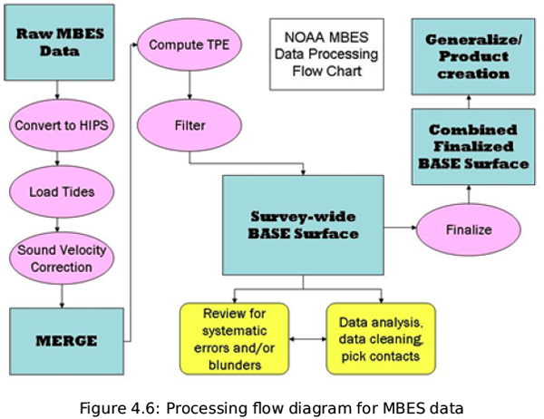
There are a few figures about data collection and quality:
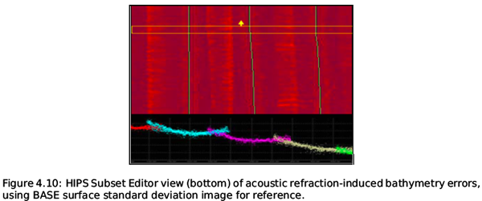
There is also a NOS Hydrographic Surveys Specifications and Deliverables pdf with a 151 pages. Specifications and Deliverables.
Welcome to the latest version of NOS Hydrographic Surveys Specifications and Deliverables document. These technical specifications detail the requirements for hydrographic surveys to be undertaken either by National Oceanic and Atmospheric Administration (NOAA) field units or by organizations under contract to the Director, Office of Coast Survey (OCS), National Ocean Service (NOS), NOAA, U.S. Department of Commerce. The April 2008 edition includes new specifications and changes since the previous April 2007 version, including updates to Tides and Water Level Requirements (Chapter 4) and Deliverables (Chapter 8). As there have been both minor and major edits throughout this new edition, it would be in the best interest to those that expect to acquire hydrographic survey data in accordance to NOS specifications, to use the current version. Please submit questions and comments through the Coast Survey's Inquiry Page.
10.30.2008 12:16
Google Earth lecture 3 ... MB-system to google earth
Today I taught part 3 of Google
Earth for the Research Tools [PowerPoint in the directory] class at CCOM. I showed a bit about
how to use ogr2ogr to read S57 and how to take an EM3002D multibeam
line (from Shallow Survey 2008) and get it into both a texture on the surface
and a thumbtack with a figure style plot.
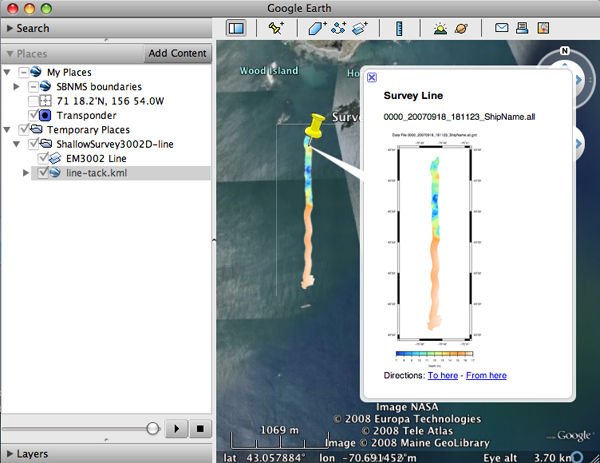
10.29.2008 19:25
MS Virtual Earth on the Mac (using VMware)
In the name of being complete, I finally gave MS Virtual Earth a try.
I am underwhelmed. However, part of my impression comes from running
it on a WinXP Pro VMware virtual machine on my MacBook pro laptop. The
first thing I had to do was upgrade the virtual machine hardware while windows
was off and then enable 3D hardware acceleration.
I don't like Explorer to start with, but then I find Virtual Earth inside an Explorer window. Not very exciting. Microsoft really needs to work on minimizing the amount of screen relastate
I need to drop it on my tablet running just Windows Tablet edition with a full harddisk. I've only got an 8G disk for my XP VM and it does not seem to be willing to uninstall VisualStudio.
If anybody going to eNav is a Virtual Earth pro, please pull me aside and show me how to get this program to shine.
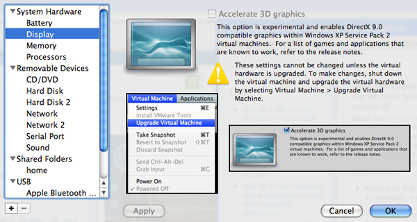
I don't like Explorer to start with, but then I find Virtual Earth inside an Explorer window. Not very exciting. Microsoft really needs to work on minimizing the amount of screen relastate
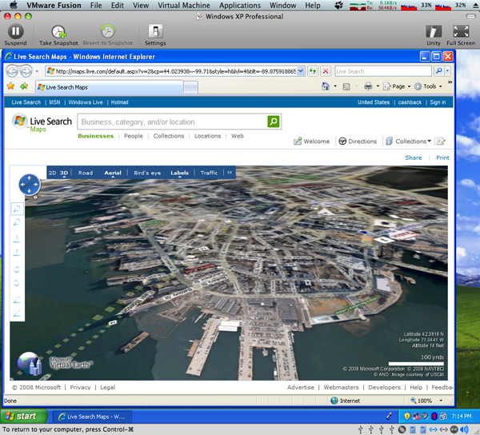
I need to drop it on my tablet running just Windows Tablet edition with a full harddisk. I've only got an 8G disk for my XP VM and it does not seem to be willing to uninstall VisualStudio.
If anybody going to eNav is a Virtual Earth pro, please pull me aside and show me how to get this program to shine.
10.29.2008 11:44
what metadata needs to be in log files?
Several of us are all working on generating log files of data from
sensors. It's not a terribly hard thing to do and we each have
slightly different requirements. I spent some time today working on
the noaadata port_server script that connects to a TCP/IP port and
logs the data while allowing other clients to receive the passed
through port_server. I added a couple things:
- Logging both the UTC human readable time of open and close of a log file
- UNIX UTC timestamp seconds to open and close
- On open, the logger calls "ntpq -p -n to find out how time is doing
- Records the logging host OS, name and version
- Optionally adding a USCG style station and UNIX timestamp to each line
- Optional file extension... e.g. .ais or .txt
% port_server.py -v -i 35000 -o 40000 --in-host=eel.ccom.nh -r -lrnhsomewhere -srnhsomewhere -v -v -u -e .aisThe resulting log file:
# Opening log file at 2008-10-29 15:02 UTC,1225292534.55 # Logging host: Darwin eel.ccom.nh 8.11.0 # NTP status: # ntp: remote refid st t when poll reach delay offset jitter # ntp: ============================================================================== # ntp: +64.73.32.134 64.73.0.9 2 u 184m 36h 377 50.946 -2.955 29.451 # ntp: -72.233.76.194 72.232.210.196 3 u 184m 36h 377 67.790 -7.215 2.654 # ntp: +64.202.112.65 64.202.112.75 2 u 184m 36h 377 33.511 -4.957 29.519 # ntp: -69.36.240.252 69.36.224.15 2 u 184m 36h 377 79.967 -8.633 26.402 # ntp: -75.144.70.35 99.150.184.201 2 u 184m 36h 375 65.124 14.143 52.945 # ntp: -209.67.219.106 74.53.198.146 3 u 8h 36h 177 52.204 60.177 118.591 # ntp: *192.43.244.18 .ACTS. 1 u 183m 36h 377 85.405 -3.497 29.069 # ntp: -63.240.161.99 64.202.112.75 2 u 184m 36h 377 40.248 3.536 35.421 !AIVDM,1,1,,A,15N00t0P19G?evbEbgatswvH05p8,0*5B,x157918,b003669712,1225292534,rnhsomewhere,1225292534.89 !AIVDM,1,1,,A,?03OwmQifbo@000,2*6E,x161035,b003669976,1225292534,rnhsomewhere,1225292534.89 !AIVDM,1,1,,B,?03OwpQGILL8000,2*04,x153483,b003669985,1225292535,rnhsomewhere,1225292535.54 # Closing log file at 2008-10-29 15:02 UTC,1225292535.64What is ACTS?
10.29.2008 09:29
Congressional Research Report - Maritime Security
RL33787 - Maritime
Security: Potential Terrorist Attacks and Protection Priorities [opencrs]
A key challenge for U.S. policy makers is prioritizing the nation's maritime security activities among a virtually unlimited number of potential attack scenarios. While individual scenarios have distinct features, they may be characterized along five common dimensions: perpetrators, objectives, locations, targets, and tactics. In many cases, such scenarios have been identified as part of security preparedness exercises, security assessments, security grant administration, and policy debate. There are far more potential attack scenarios than likely ones, and far more than could be meaningfully addressed with limited counter-terrorism resources. There are a number of logical approaches to prioritizing maritime security activities. One approach is to emphasize diversity, devoting available counterterrorism resources to a broadly representative sample of credible scenarios. Another approach is to focus counter-terrorism resources on only the scenarios of greatest concern based on overall risk, potential consequence, likelihood, or related metrics. U.S. maritime security agencies appear to have followed policies consistent with one or the other of these approaches in federally-supported port security exercises and grant programs. Legislators often appear to focus attention on a small number of potentially catastrophic scenarios. Clear perspectives on the nature and likelihood of specific types of maritime terrorist attacks are essential for prioritizing the nation's maritime anti-terrorism activities. In practice, however, there has been considerable public debate about the likelihood of scenarios frequently given high priority by federal policy makers, such as nuclear or "dirty" bombs smuggled in shipping containers, liquefied natural gas (LNG) tanker attacks, and attacks on passenger ferries. Differing priorities set by port officials, grant officials, and legislators lead to differing allocations of port security resources and levels of protection against specific types of attacks. How they ultimately relate to one another under a national maritime security strategy remains to be seen. Maritime terrorist threats to the United States are varied, and so are the nation's efforts to combat them. As oversight of the federal role in maritime security continues, Congress may raise questions concerning the relationship among the nation's various maritime security activities, and the implications of differing protection priorities among them. Improved gathering and sharing of maritime terrorism intelligence may enhance consistency of policy and increase efficient deployment of maritime security resources. In addition, Congress may assess how the various elements of U.S. maritime security fit together in the nation's overall strategy to protect the public from terrorist attacks.
10.29.2008 07:22
Phoenix in Safe Mode
As evidenced by no images from the spacecraft yesterday, the Phoenix
Mars Lander probably went into Safe Mode. I'll leave it to the
team to say more. There is not a lot of solar power available to the
spacecraft as winter sets in.
Update 29-Oct-2008 evening:
Weather Hampers Phoenix On Mars
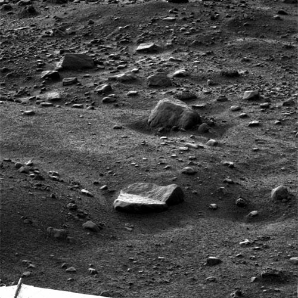
Update 29-Oct-2008 evening:
Weather Hampers Phoenix On Mars
NASA'S Phoenix Mars Lander entered safe mode late yesterday in response to a low-power fault brought on by deteriorating weather conditions. While engineers anticipated that a fault could occur due to the diminishing power supply, the lander also unexpectedly switched to the "B" side of its redundant electronics and shut down one of its two batteries. During safe mode, the lander stops non-critical activities and awaits further instructions from the mission team. Within hours of receiving information of the safing event, mission engineers at NASA's Jet Propulsion Laboratory, Pasadena, Calif., and at Lockheed Martin in Denver, were able to send commands to restart battery charging. It is not likely that any energy was lost. Weather conditions at the landing site in the north polar region of Mars have deteriorated in recent days, with overnight temperatures falling to -141F (-96C), and daytime temperatures only as high as -50F (-45C), the lowest temperatures experienced so far in the mission. A mild dust storm blowing through the area, along with water-ice clouds, further complicated the situation by reducing the amount of sunlight reaching the lander's solar arrays, thereby reducing the amount of power it could generate. Low temperatures caused the lander's battery heaters to turn on Tuesday for the first time, creating another drain on precious power supplies. Science activities will remain on hold for the next several days to allow the spacecraft to recharge and conserve power. Attempts to resume normal operations will not take place before the weekend. ...
10.28.2008 13:05
Val Schmidt's weblog
Check out Val Schmidt's blog [aliceandval.com]
Brain Log - Think it out. Write it down. a place to capture ideas, howtos and other details related to ocean engineering and oceanographyHe also has other stuff online such as a whole bunch of matlab code
10.28.2008 07:07
Shallow Survey 2008 - Tom Lippmann's WaveRunner survey
I'm using Tom Lippmann's single beam WaveRunner survey from the
Shallow Survey 2008 Common Dataset for the class I am teaching today.
First the track lines... I need to work more on my line generation tool to allow decimating the number of coordinates and to split lines when the distance between points exceeds a threshold.
Then I used Fledermaus to grid the data and export the DEM to Google Earth. Note, I used a grid cell size that is a bit too small for the data, so you can see the track lines in the resulting model.
The course material is here: 2008-Fall-ResearchTools
First the track lines... I need to work more on my line generation tool to allow decimating the number of coordinates and to split lines when the distance between points exceeds a threshold.
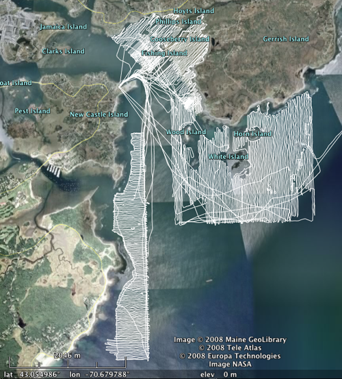
Then I used Fledermaus to grid the data and export the DEM to Google Earth. Note, I used a grid cell size that is a bit too small for the data, so you can see the track lines in the resulting model.
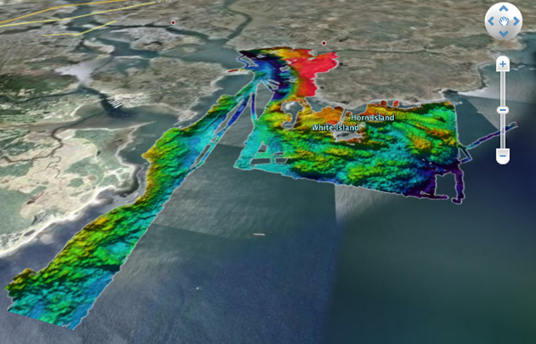
The course material is here: 2008-Fall-ResearchTools
10.27.2008 09:09
Cosco Busan report
Pilot Commission Finds Cosco Busan Pilot John Cota At Fault [gCaptain.com]
Oil spill ship pilot found at fault in accident [sfgate.com/San Francisco Chronical]
Oil spill ship pilot found at fault in accident [sfgate.com/San Francisco Chronical]
The ship accident that caused a huge oil spill in San Francisco Bay a year ago was the result of a series of mistakes by Capt. John Cota, according to a report released Thursday by the state pilot commission. "There was unequivocally pilot error," said Gary Gleason, an attorney for the state Board of Pilot Commissioners, which is appointed by the governor to regulate ship pilots in San Francisco, Suisun and San Pablo bays. ...Board of Pilot Commissioners for the Bays of San Francisco, San Pablo and Suisun: INCIDENT REVIEW COMMITTEE REPORT: NOVEMBER 7, 2007 ALLISION WITH THE SAN FRANCISCO-OAKLAND BAY BRIDGE [pdf - pilotcommission.org]
... As a result of its investigation, the IRC concluded that pilot misconduct was a factor in the allision. The IRC's conclusions are summarized as follows: (1) That, prior to getting underway, Captain Cota failed to utilize all available resources to determine visibility conditions along his intended route when it was obvious that he would have to make the transit to sea in significantly reduced visibility; (2) That Captain Cota had exhibited significant concerns about the condition of the ship's radar and a lack of familiarity with the ship's electronic chart system, but then failed to properly take those concerns into account in deciding to proceed; (3) That, considering the circumstances of reduced visibility and what Captain Cota did and did not know about the ship and the conditions along his intended route, he failed to exercise sound judgment in deciding to get underway; (4) That Captain Cota failed to ensure that his plans for the transit and how to deal with the conditions of reduced visibility had been clearly communicated and discussed with the master; (5) That, once underway, Captain Cota proceeded at an unsafe speed for the conditions of visibility; (6) That, when Captain Cota began making his approach to the Bay Bridge, he noted further reduced visibility and then reportedly lost confidence with the ship's radar. While he could have turned south to safe anchorage to await improved visibility or to determine what, if anything was wrong with the radar, Captain Cota failed to exercise sound judgment and instead continued on the intended transit of the M/V Cosco Busan, relying solely on an electronic chart system with which he was unfamiliar; and (7) That Captain Cota failed to utilize all available resources to determine his position before committing the ship to its transit under the Bay Bridge. ...
10.26.2008 07:59
Fall - Sweet potato harvest
Edwardo and Maria planted a sweet potato this summer that did not get used
in time. I wasn't totally sure what to expect. The garden is done for
this year and I started disassembling the posts for the winder, so it was
time to find out what was growing underground. Here is how the garden
looked this weekend:
After digging around the sweet potato as instructed by Capt Ben, I found this crazy mess:
After some cleanup, it looks like I have found some strange alien fish in my back yard.
They aren't big like in the store, but that means they will cook pretty quickly.
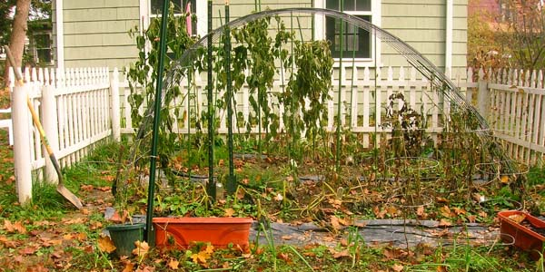
After digging around the sweet potato as instructed by Capt Ben, I found this crazy mess:
After some cleanup, it looks like I have found some strange alien fish in my back yard.
They aren't big like in the store, but that means they will cook pretty quickly.
10.25.2008 08:57
Fledermaus view of Robert E. location on Mars from Opportunity
Here is a second DEM from the MER rovers. This one shows the "blueberries"
seen by Opportunity. This product was created by Mark Lemmon and Kurt
Schwehr. It was sort of released on the Photojournal:
PIA05276: A Sharp Look at Robert E
First the context image:
Here is one of the source images from the MI: PIA05237
Here is the DEM created by looking at the focus of multiple MI images taken at different stand off distances:
The final project with the texture draped on the image:
I might have done more while working on MER, but I can't find anything else on my backups.
PIA05276: A Sharp Look at Robert E
First the context image:
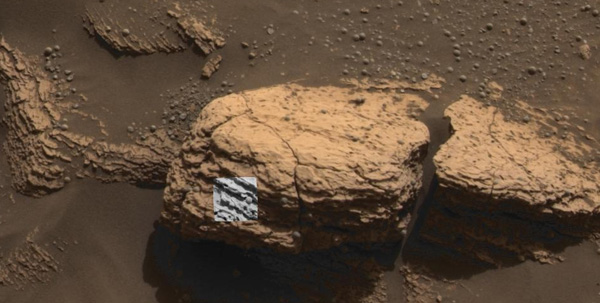
Here is one of the source images from the MI: PIA05237
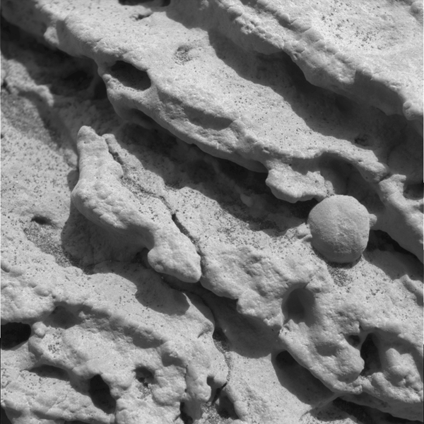
Here is the DEM created by looking at the focus of multiple MI images taken at different stand off distances:
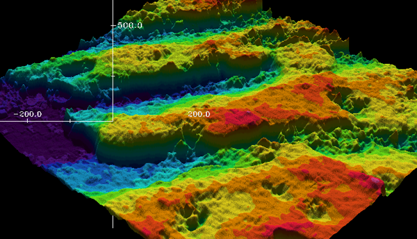
The final project with the texture draped on the image:
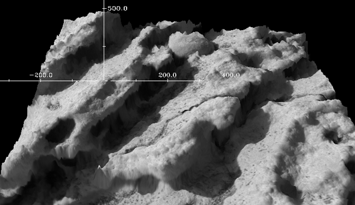
I might have done more while working on MER, but I can't find anything else on my backups.
10.25.2008 08:23
Generic Sensor Format (GSF) meeting
At the end of the Shallow Survey 2008 Conference there were two
concurrent sessions: Survey to Chart Workshop and GSF Workshop. I
picked going to the GSF Workshop, but would have liked to have been
able to attend the other. SAIC did a good job of presenting Generic Sensor Format
(GSF)
Here is my list of items covered from the end of meeting summary:
Generic Sensor Format (GSF) has become a standard file format for bathymetry data and is widely used in the maritime community. This single-file format is one of the U.S. Department of Defense Bathymetric Library (DoDBL) processing formats and is currently version-controlled jointly by Science Applications International Corporation (SAIC) and the U.S. Navy. GSF is designed to efficiently store and exchange information produced by geophysical measurement systems before it has been processed into either vector or raster form. The structure is particularly useful for data sets created by systems such as multibeam echosounders that collect a large quantity of data. GSF is designed to be modular and adaptable to meet the unique requirements of a variety of sensors.Val Schmidt also presented his ideas on a Sidescan addition to GSF.
Here is my list of items covered from the end of meeting summary:
- Best practices documents - List of standard comments
- Questions about defining order of rotations... see best practices
- Cleanup of spec document - Create a list of mandatory fields
- Performance caching - Mark and Kurt will try to do some testing
- native OS verses POSIX accessing of files performance difference?
- 64 bit file support
- Long term growth of sensor specific growth... generalization - understanding how to keep complexity down
- Add Separately navigation for - surface vessel and tow fish
- Copyright cleanup and add license (BSD?)
- Formalize conf management (CM) process for how changes are proposed
- Put the GSF regression tests on the site
- Horizontal datum - WGS84 has several ellipsoids that change with time... clarify which
- Expand attitude to handle multiple sensors and uncertainty
- Possibly add a Schema
- CTD - save all, not just sound speed.
- request to increase the stored heading precision, however the group thought that current precision is okay
CC := gcc-4 # Only needed if you want to get the latest GCC on a mac with fink
CFLAGS := -O3 -funroll-loops -fexpensive-optimizations -DNDEBUG
CFLAGS += -ffast-math
CFLAGS += -Wall -Wimplicit -W -pedantic -Wredundant-decls -Wimplicit-int
CFLAGS += -Wimplicit-function-declaration -Wnested-externs
CFLAGS += -march=core2 # And likely to make the code not work for other CPUs
SRCS:=${wildcard *.c}
OBJS:=${SRCS:.c=.o}
libgsf.a: ${OBJS}
ar -rs $@ $+
clean:
-rm *.o
10.24.2008 12:50
US Hydro 2009 Abstracts due Nov 14th
Shallow Survey 2008 is finishing up today. Time to start thinking
about Hydro in the spring...
http://www.ushydro2009.com/
The U.S. Hydro 2009 Conference, sponsored by The Hydrographic Society of America, will be held at the Sheraton Waterside Hotel in Norfolk, Virgina on May 11-14, 2009. U.S. Hydro 2009 is a continuation of the series of hydrographic conferences that alternate between the United States and Canada. This is the twelfth U.S. Hydrographic conference and follows on the very successful U.S. Hydro 2007, also held in Norfolk, Virginia. In addition to the technical papers, the conference will feature an extensive series of workshops, social program, and an exhibition hall. The conference will include technical sessions on the latest developments and applications in hydrographic surveying, multibeam and side scan sonar, data management, electronic charting, marine archaeology, and related topics. Authors are invited to submit abstracts of 300 words or less for papers on these topics to the Program Chairman, Captain Guy Noll, NOAA (papers@ushydro2009.com) by November 14, 2008. Notification of acceptance will be made by February 1, 2009. The deadline for submission of papers and inclusion on the CD will be March 7, 2009.Shallow Survey 2011 will be in Wellington, New Zealand.
10.23.2008 14:20
When did a vessel leave an area?
I'm getting an N-AIS feed of some vessels. I just got asked about how
often vessels are being sampled. Here some quick analysis for one
vessel just off of Boston (MMSI=366956050). First I wrote a program
to take my XYMT (long lat MMSI UTC_unix_timestamp) and convert it to a
delta time.
Then I reran the code with the italic code that throws out the times over 200 seconds. This shows the stability of the 60 second reporting. I am not sure where the timestamp is coming from, but it is probably one of:
Finally a closeup that gives a sens of how stable the report interval is:
It takes a histogram to see what is going on. For samples that are less than 200 seconds apart, there are samples centered around 60 seconds, 120 seconds, and 180 seconds. Perhaps my TCP/IP assumption is wrong? I need to run a packet sniffer to check.
#!/usr/bin/env python
prev = None
for line in file('one-vessel.xymt'):
f = line.split()
val = float(f[3])
if prev == None:
prev = val
continue
delta = val - prev
prev = val
if delta > 200:
continue
print delta
I ran the above first without the italic bit above to plot all
times. This gives spikes where ever the vessel left the search
bounding box or the data logging system was offline. You will see
most of the points are close to 0. The channel I'm using is supposed
to decimate reports to one every 60 seconds. This removes the
negative delta times that I get from the full rate data feeds (due to
USCG clock skews on the site controllers for each receive station).
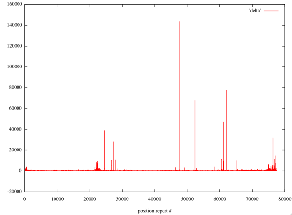
Then I reran the code with the italic code that throws out the times over 200 seconds. This shows the stability of the 60 second reporting. I am not sure where the timestamp is coming from, but it is probably one of:
- At the site controller next to the receiver
- At the USCG aggregator
- At my end in the USCG software that receives from the agregator via TCP/IP
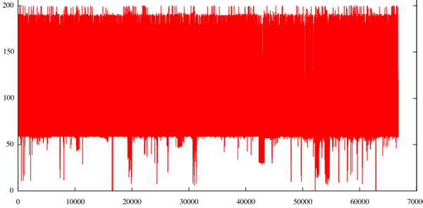
Finally a closeup that gives a sens of how stable the report interval is:
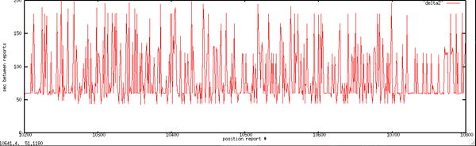
It takes a histogram to see what is going on. For samples that are less than 200 seconds apart, there are samples centered around 60 seconds, 120 seconds, and 180 seconds. Perhaps my TCP/IP assumption is wrong? I need to run a packet sniffer to check.
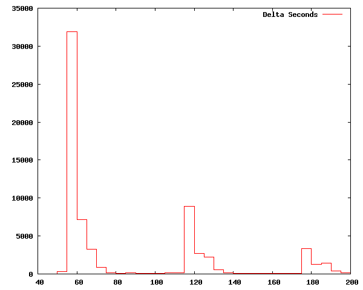
10.23.2008 08:02
NGA Sailing Directors to go with the NOAA Coast Pilots
Yesterday, I briefly met with several people from the National Geospatial-Intelligence Agency
(NGA). They showed me their work with the international Sailing
Directions that can be found under the volumes
page. I had only been focusing on the NOAA Coast Pilots and the
Sailing Directions for New Brunswick thanks to Andy's Masters Thesis
that used the local harbor. I ran into some trouble at first. NGA
packages their PDF documents as a zip containing a MS Windows exe
installer. As a Mac user without a Windows VMWare image at the
moment, I had to break out the Windows tablet to get at the pdfs. It
would be helpful to the community and the web search engines to also
put the straight pdfs on the web.
The first document to look at is "Pub. 140: Sailing Directions (Planning Guide)". This gives an overview of the countries and gives a map to show what pub to use for each region of the world.
Here is one of the pages on the United Kingdom:
Pub 142 about Ireland looks very much like the NOAA Coast Pilots.
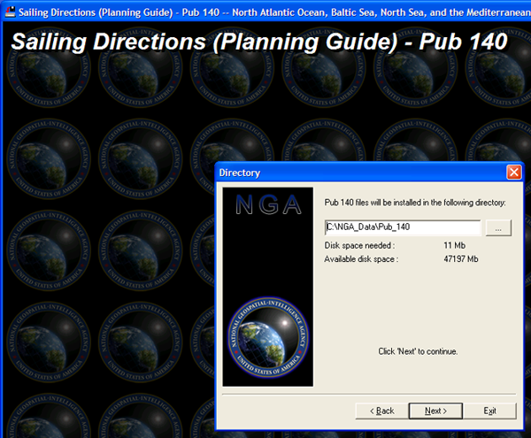
The first document to look at is "Pub. 140: Sailing Directions (Planning Guide)". This gives an overview of the countries and gives a map to show what pub to use for each region of the world.
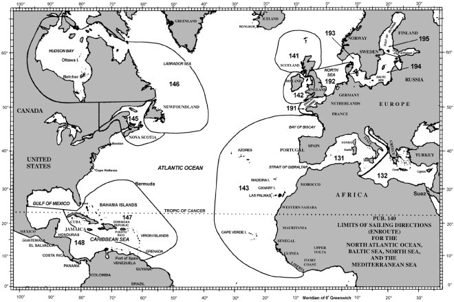
Here is one of the pages on the United Kingdom:
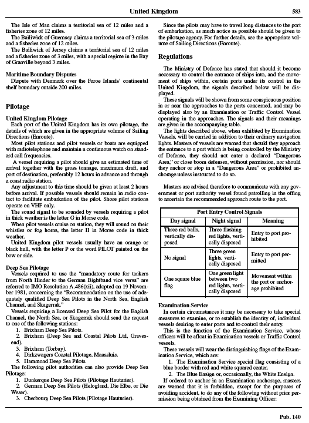
Pub 142 about Ireland looks very much like the NOAA Coast Pilots.
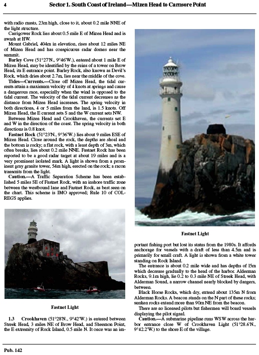
10.22.2008 10:37
Fledermaus view of Mars - Microscopic
I've been talking to the IVS folks while at the Shallow Survey and
remembered that I did some work in Fledermaus that has yet to see the
light of day. This is a project that Mark Lemmon and I did in early 2004.
Mark took a series of microscopic images on Mars with the MER - each at
at different level over the rock abrasion tool (RAT) hole on the rock face.
First, here is the rock as view from a camera under the deck in the front: PIA05175: Adirondack Under the Microscope
Then here is the DEM without texture:
Finally, here is the DEM with the image texture draped on top.
First, here is the rock as view from a camera under the deck in the front: PIA05175: Adirondack Under the Microscope
Then here is the DEM without texture:
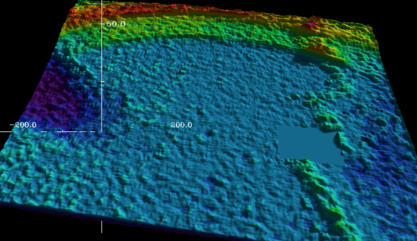
Finally, here is the DEM with the image texture draped on top.
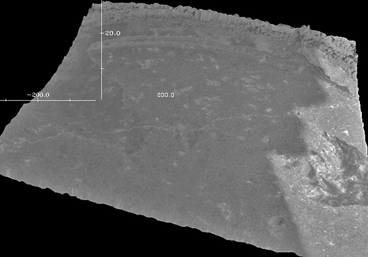
10.21.2008 10:33
Finding a vessel's MMSI
When you don't have the right MMSI for a vessel, you have to go through
the shipdata AIS messages to try to find the vessel's name. Here is how
I did it for one vessel. First get the all the 2 part AIS messages from the
stations that you know are in the area. The station is after the normal AIS
message in a USCG formatted AIS message log.
for file in ais-logs-*.bz2; do
echo $file
base=${file%%.bz2}
bzcat $file | egrep 'station1|station2|station3' | egrep 'AIVDM,2,[12],[0-9]?,[AB],' >> 2parts
done
Now you need to normalize the AIS messages such that they are one line each.
cat 2parts | ais_normalize.py -t -w 10 > 2parts.normYou only want the msg 5/shipdata messages.
egrep '!AIVDM,1,1,[0-9]?,[AB],5' 2parts.norm > 2parts.norm.5Then create a sqlite3 database of these shipdata messages.
ais_build_sqlite.py -C 2parts.norm.5 -d shipdata.db3Now look for your vessel by a partial name.
% sqlite3 shipdata.db3 'select userid,name,callsign from shipdata where name like "%ODYSSEA%" LIMIT 5;' 338208000|ODYSSEA GIANT |WCZ7319 338208000|ODYSSEA GIANT |WCZ7319 338208000|ODYSSEA GIANT |WCZ7319 338208000|ODYSSEA GIANT |WCZ7319 338208000|ODYSSEA GIANT |WCZ7319Now I have the MMSI (aka UserID) for the Odyssea Giant. Better yet, I can find out the basic stats of the vessel and if they have changed over the time period:
% sqlite3 shipdata.db3 'select userid, imonumber, callsign, name, \ shipandcargo, dimA+dimB, dimC+dimD, destination, draught \ from shipdata where name like "%ODYSSEA%" ;' | sort -u 338208000|7408055|WCZ7319|ODYSSEA GIANT |31|15|35|BOSTON MASS. |13.5 338208000|7408055|WCZ7319|ODYSSEA GIANT |31|15|35|BOSTON MASS. |3.5 338208000|7408055|WCZ7319|ODYSSEA GIANT |32|0|0|BOSTON MASS. |3.9 338208000|7408055|WCZ7319|ODYSSEA GIANT |32|15|35|BOSTON MASS. |3.5 338208000|7408055|WCZ7319|ODYSSEA GIANT |32|15|35|BOSTON MASS. |3.9 338208000|7408055|WCZ7319|ODYSSEA GIANT |32|15|35|TUXPAN.MEX. |3.9shipandcargo of 31 and 32 are as expected for this ship:
31: towing 32: towing length exceeds 200m or breadth exceeds 25m
10.21.2008 08:17
New NMEA like AIS string and the CnC string
In efforts to make AIS easier to use, I've added some alternate output
formats to my noaadata
python package. The first idea was to convert the NMEA AIS messages
into a new NMEA like string (that violates the NMEA standards) such
that it is easy to parse, but that does not require unpacking binary
data. As we start with AIVDM data, I wanted to call it VDT for
Vhf Data Text, but that is taken (at least
according to Google). Instead I went for Automatic
Identification system Text. I completely throw out the
very small character per line limit of NMEA and my fields are not fixed
width. I am sure I will run into trouble when someone puts a comma or
* in there vessel name (I can't remember if those characters are allowed
off the top of my head).
It is probably best to
walk through the message with an example:
!AIVDM,1,1,,B,1000000P01Jt;pDHaP>78gvt0<02,0*57,rnhcml,1213228823.96This decodes to:
position:
MessageID: 1
RepeatIndicator: 0
UserID: 0 # miss-configured AIS transponder
NavigationStatus: 0
ROT: -128
SOG: 0.1
PositionAccuracy: 0
longitude: -70.73833
latitude: 43.07636
COG: 182.6
TrueHeading: 511
TimeStamp: 30
RegionalReserved: 0
Spare: 0
RAIM: False
state_syncstate: 0
state_slottimeout: 3
state_slotoffset: 2
The corresponding AIAIT message for this AIS packet is:
$AIAIT,pos_a,,B,1,0,0,0,731.386484055,0.1,0,-70.73833,43.07636,182.6,511,30,0,0,False,0,3,,,,,,rnhcml,1213228823.96*25In order here are the fields. Those where I don't currently parse the message or I don't know are the typical NMEA field of an empty string (',,').
0 nmea_type $AIAIT 1 message_type pos_a # Messages 1-3 from Class A vessels will all be pos_a 2 seq_id 3 chan B 4 message_id 1 5 repeat_indicator 0 6 user_id 0 # MMSI 7 navigation_status 0 8 ROT 731.386484055 9 SOG 0.1 10 position_accuracy 0 11 longitude -70.73833 12 latitude 43.07636 13 cog 182.6 14 True_Heading 511 15 time_stamp 30 16 special_maneuver_indicator 0 17 spare 0 18 raim False 19 sync_state 0 20 slot_timeout 3 21 receive_stations 22 slot_num 23 utc_hr 24 utc_min 25 slot_offset 26 station rnhcml 27 unix_time_stamp 1213228823.96 # UTC seconds since the EpochThanks to Mark Paton and Moe Doucet for suggesting I make a message type similar to NMEA with all the fields available. IVS already has a position format that they informally call C&C. It was pretty easy to make an AIS NMEA to C&C converter so I threw that in too.Here is an example string:
!AIVDM,1,1,,B,15Mwq1WP01rB2crBh5G:6?v200Rj,0*59,s28057,d-095,T49.46179499,x91028,rRDSULI1,1224516422This decodes to:
MessageID: 1
RepeatIndicator: 0
UserID: 366999814
NavigationStatus: 7
ROT: -128
SOG: 0.1
PositionAccuracy: 1
longitude: -79.94475166666666666666666667
latitude: 32.77028666666666666666666667
COG: 258.4
TrueHeading: 511
TimeStamp: 1
RegionalReserved: 0
Spare: 0
RAIM: False
state_syncstate: 0
state_slottimeout: 0
state_slotoffset: 2226
My resulting C&C message is:
$C&C,366999814,15:27:02.0,-79.9447516667,32.7702866667,0,0.0,0.0,0.0,0.0*10The code for both will be in noaadata/aisutils/nmea_{ait,cnc}.py for the next release of the software.
10.21.2008 07:07
Fall is ending
We just had a few days with frost involving scraping car windows in
the morning and laying waste to the garden. The sun is now able to
weak penetrate into the back yard where before it had been beat back
by thick green tree leaves. Winter is near and I have a pile of green
tomatoe refugees on my kitchen table.
10.20.2008 23:34
Shallow Survey begins
Shallow Survey is underway. Lots of familar faces here in NH.
10.18.2008 08:32
Shallow Survey talk this Weds
Matt Plumlee will be presenting our work on the GeoCoastPilot at Shallow Survey 2008 on Weds
morning. If you are here for the conference and want to talk, but
are not finding me, drop me an email.
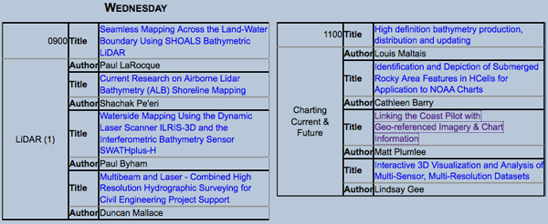
GeoCoastPilot
Linking the Coast Pilot with
Geo-referenced Imagery & Chart Information
.
Matthew Plumlee, Kurt Schwehr, Briana Sullivan, Colin Ware
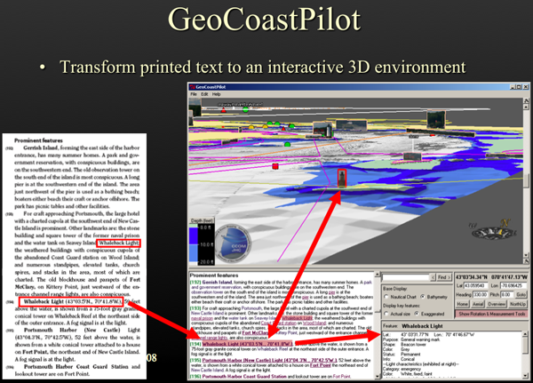
10.17.2008 19:42
Phx standin - improving images for press releases
I did a quick stand in today on Phoenix. I did a little Photoshop
enhancement for today's press release. I thought that it would be
nice to see a little better into the shadowed area on the left and
top left of RS138EFF908470172_1F8B0MDM1.
I didn't have a lot of time on the teleconference to try any alternatives. Here I tried to grab just left top left dark area and brighten up only that part. I was hoping to keep the original contrast in the material between the TEGA doors. The source image is very heavily compress, so Photoshop tends to do things along DCT square blocks. This jumps right out and I really see where I stitched back together even after a bit of use of the blur tool.
To avoid any confusion, I usually alter the name of the release image to make it clear that this is not the original EDR (Experimental Data Record). Here I added "-brighten". The end result: Soil Fills Phoenix Laboratory Cell [JPL]
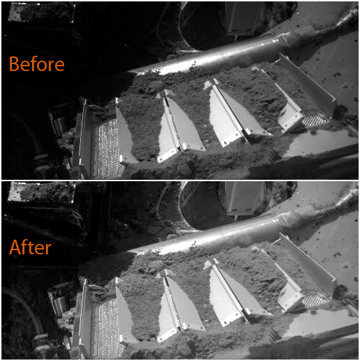
I didn't have a lot of time on the teleconference to try any alternatives. Here I tried to grab just left top left dark area and brighten up only that part. I was hoping to keep the original contrast in the material between the TEGA doors. The source image is very heavily compress, so Photoshop tends to do things along DCT square blocks. This jumps right out and I really see where I stitched back together even after a bit of use of the blur tool.
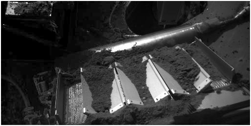
To avoid any confusion, I usually alter the name of the release image to make it clear that this is not the original EDR (Experimental Data Record). Here I added "-brighten". The end result: Soil Fills Phoenix Laboratory Cell [JPL]
This image shows four of the eight cells in the Thermal and Evolved-Gas Analyzer, or TEGA, on NASA's Phoenix Mars Lander. TEGA's ovens, located underneath the cells, heat soil samples so the released gases can be analyzed. . Left to right, the cells are numbered 7, 6, 5 and 4. Phoenix's Robotic Arm delivered soil most recently to cell 6 on the 137th Martian day, or sol, of the mission (Oct. 13, 2008). . Phoenix's Robotic Arm Camera took this image at 3:03 p.m. local solar time on Sol 138 (Oct. 14, 2008). . Phoenix landed on Mars' northern plains on May 25, 2008. . The Phoenix Mission is led by the University of Arizona, Tucson, on behalf of NASA. Project management of the mission is by NASA's Jet Propulsion Laboratory, Pasadena, Calif. Spacecraft development is by Lockheed Martin Space Systems, Denver.PIA11236 on the JPL Planetary Photojournal.
10.17.2008 10:50
Halloween in Portsmouth Harbor
Check out this great picture that Janice sent around!
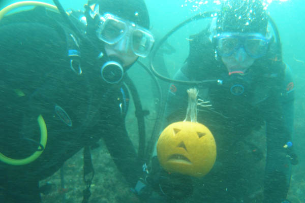
BOO!! That's right, Happy Halloween from Portsmouth Harbor! . This photo was taken in July 2008 as Glenn McGillicuddy and Liz Kintzing deployed a set of current meters for my thesis. I wonder what else (besides this very well-preserved Jack-o-Lantern) was hanging out down in the sandwave field...?
10.17.2008 09:55
SUEZ finishes pipeline for Neptune terminal off of Boston
This is a Suez press release...
SUEZ LNG Subsidiary Completes Pipeline Construction for Neptune
Offshore LNG Facility Company Will Return May 2009 for Buoy
Installation and Pipeline Connection [market watch]. Disclosure:
I am doing related to supporting the project.
BOSTON, Oct 16, 2008 (BUSINESS WIRE) -- SUEZ LNG NA LLC (GDF SUEZ Group) announced today that it has completed pipeline construction for its offshore LNG project, Neptune. The first phase of construction began in late July and included the installation of a 13-mile sub-sea pipeline that will connect the Neptune LNG facility with the existing Spectra Energy HubLineSM. The second phase, scheduled to begin in early May 2009 and continue into September 2009, includes connecting the new pipeline to the HubLineSM and installing two off-loading buoys. Upon completion, the LNG facility will consist of an unloading buoy system where specially designed vessels will moor, offload their natural gas, and deliver it to customers in Massachusetts and throughout New England. . "We're pleased to have completed phase one of our project with the least possible impact to the environment and what we hope has been minimal disruption to the local communities," said Clay Harris, SUEZ LNG NA President and CEO. "We thank area residents and local community groups for their understanding and support, and also municipal, state, and federal officials for their assistance." . "SUEZ LNG has been providing about 20 percent of the natural gas to New England through our Everett LNG import facility, which has been in operation since 1971," added Harris. "The addition of Neptune will solidify and also reinforce our continued commitment to serving the region and helping meet its growing demand for natural gas. This month we have reached an important step in fulfilling this commitment." . The City of Gloucester will serve as the home port for the Neptune project, representing a direct infusion of over $10 million into the local economy over the expected lifespan of the project. This includes SUEZ's lease at the Cruiseport, where it will dock its support and towing vessel for the project, as well as lease storage and office space. The support vessel is equipped with fire-fighting equipment, and will be available to local emergency responders. . Pipeline installation activities for 2008 included: (1) laying the pipeline, consisting of both a natural gas transmission line and a flowline that connects the buoys, on the sea bottom; (2) plowing a sub-sea trench and placing the pipeline in the trench; and (3) backfilling the trench and hydrotesting to ensure pipeline integrity. Next year, the company will focus on installing the buoy system, which will connect the LNG vessels to the sub-sea pipeline, and the connection between the new pipeline to the existing Spectra Energy HubLineSM. ... SOURCE: SUEZ LNG NA LLC
10.16.2008 13:52
spamhaus and ccom
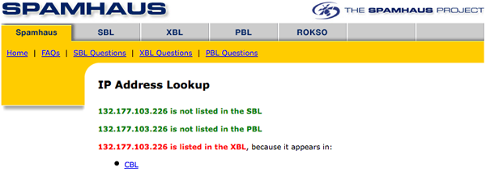
CBL says...
... high volume spam sending trojan - it is participating or facilitating a botnet sending spam or spreading virus/spam trojans. ... This is identified as the Grum spambotSo we might not be able to get email out from ccom very well today. Joy...
10.16.2008 11:06
Boat sinks in the Piscataqua River this morning
Thanks to Janice for this... We have a pretty small port here, so this is big news for us:
Boat sinks in Piscataqua River
Boat sinks in Piscataqua River
A boat sank to the bottom of the Piscataqua River Thursday morning in the area between Geno's Chowder & Sandwich Shop and the Peirce Island boat launch. ... A buoy was attached to the sunken boat to alert other boaters. New Hampshire Marine Patrol officers estimated the boat was 34 feet long. . It is not known at this time what caused the boat to sink.If you know any more and/or are willing to share a picture to post, please email me. There should be a pretty good view from the Pierce Island Rd bridge.
10.16.2008 10:26
Google Earth for seafloor surveys - UK HO
Larry M. just pointed me to: Survey Information in Google Earth Format [hydro international]
It's great to see the idea catching on! I first demoed the idea on a Nov 2006 cruise on the R/V Revelle. Then in Feb 2007, IVS added Google Earth export to Fledermaus. Finally, at Hydro 2007, we presented:
The UK Hydro office now has: Civil Hydrography Programme Results
Now they just need a master kml that loads the data on demand over the network.
The Hydrography Unit of the MCA's Navigation Safety branch have released a selection of files for download to the general public which provide information regarding some of the MCA's bathymetric multibeam surveys. ...
It's great to see the idea catching on! I first demoed the idea on a Nov 2006 cruise on the R/V Revelle. Then in Feb 2007, IVS added Google Earth export to Fledermaus. Finally, at Hydro 2007, we presented:
Schwehr, K., Sullivan, B., Gardner, J. V. (2007), Google Earth Visualizations: Preview and Delivery of Hydrographic and Other Marine Datasets, US Hydro 2007, 14-17 May.
The UK Hydro office now has: Civil Hydrography Programme Results
Now they just need a master kml that loads the data on demand over the network.
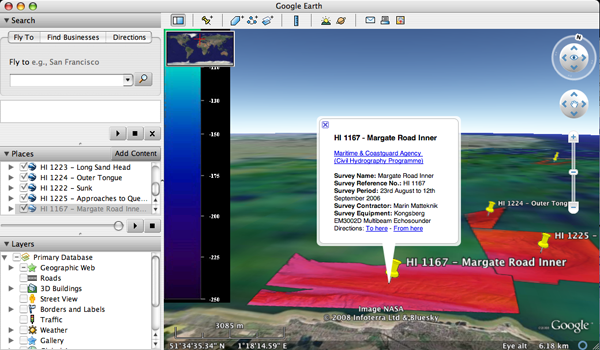
10.15.2008 23:35
Boston Port Operations Group (POG) - Unveiling the Right Whale Zone Msg
Today was huge day for the team working on Rightwhale AIS Project
(RAP). This was the first time ICAN and I have been in the same room
to try integrating the RAP server code that I wrote with ICAN's
electronic charting software. For a first integration test, it went
unbelievably smooth. And this was at the Boston Port Operations Group
(POG) meeting. Dave and Leila were there for the Stellwagen Bank and
Joel and Dudley were there for ICAN. Regulus II was able to receive
the zone messages for each of the Cornell autobuoys without trouble.
I used the backup hardware to do the conversion from the Cornell
interface through to transmitting AIS Message 8's with a DAC of 366
and an FI of 34. We got our first feedback of people seeing the
system in action. The timing was good too as we had buoys both with
and without whale detections. Here is the overall view in Regulus II:
Clicking on a particular zone brings up more information about that zone. In this closeup, zone 2 is selected. Right now, a box appears around the buoy location. The text box on the left shows that there are 3 hours and 37 minutes until the zone expires and that there has been a "Right whale detection".
This is just the first Boston trial. I am excited to see what tweaks ICAN makes in the future.
Here is the hardware on the table that was used to demonstrate the system:
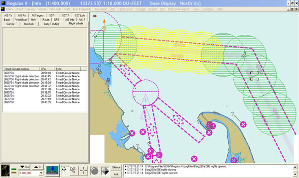
Clicking on a particular zone brings up more information about that zone. In this closeup, zone 2 is selected. Right now, a box appears around the buoy location. The text box on the left shows that there are 3 hours and 37 minutes until the zone expires and that there has been a "Right whale detection".
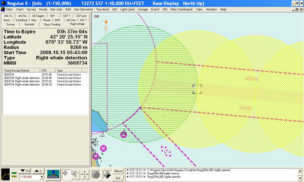
This is just the first Boston trial. I am excited to see what tweaks ICAN makes in the future.
Here is the hardware on the table that was used to demonstrate the system:
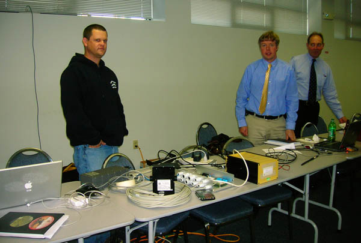
10.15.2008 23:07
Phoenix makes Popular Mechanics Top 10 Innovations
Popular Mechanics has published their 2008 Breakthrough Awards...
Number 3 - NASA Phoenix Mars Mission
Number 3 - NASA Phoenix Mars Mission
May 25, 2008, brought sweet vindication to Peter Smith. On that day, in the Jet Propulsion Laboratory control room in Pasadena, Calif., the senior research scientist for the University of Arizona's Lunar and Planetary Laboratory watched from behind the manned banks of computers as a spacecraft hurtled toward Mars. Smith had designed cameras for three previous Mars missions. The 1997 Pathfinder effort was successful. But the 1999 Mars Polar Lander crashed on the Martian surface, and the 2001 Surveyor mission was canceled because of the Lander accident. Now, after the back-to-back failures, he was leading the $420 million Phoenix Mars Mission-a program he had concocted and proposed. In the control room, a JPL team member held a thick contingency plan written to cover every possible failure scenario. But, as the spacecraft passed through each successful stage of the landing, "he tore up a page and tossed it into the air," Smith says. By the time the tension in the room had morphed into exultation, "it looked like it was snowing." ...
10.15.2008 11:58
Short Sea Shipping report
Sitting in the Boston Port Operators' Group (POG) meeting today. This
just came up...
America's Deep Blue Highway How Coastal Shipping Could Reduce Traffic Congestion, Lower Pollution, And Bolster National Security
America's Deep Blue Highway How Coastal Shipping Could Reduce Traffic Congestion, Lower Pollution, And Bolster National Security
America must rebuild and reinvent its transportation system. We have a 19th century rail network, a 20th century highway system, and 21st century transportation gridlock looming on the near horizon. Like education or health care, transportation is fundamental to the economy, a major issue in our lives. We must return to the sea to get freight moving. The now underused deep blue highway could provide resilience and improve the environmental performance of the nation's transportation system. Coastal shipping could complement, not compete with, trucking and rail. This is especially critical given current pressures on the trucking industry, such as rising fuel costs and labor shortages. . From colonial times until the Civil War...
10.14.2008 21:56
pH and Ocean Noise
Unanticipated consequences of ocean acidification: A noisier ocean at lower pH [AGU GRL]
We show that ocean acidification from fossil fuel CO2 invasion and reduced ventilation will result in significant decreases in ocean sound absorption for frequencies lower than about 10 kHz. This effect is due to known pH-dependent chemical relaxations in the B(OH)3/B(OH)4 - and HCO3 -/CO3 2- systems. The scale of surface ocean pH change today from the +105 ppmv change in atmospheric CO2 is about -0.12 pH units, resulting in frequency dependant decreases in sound absorption (alpha = dB/km) exceeding 12%. Under reasonable projections of future fossil fuel CO2 emissions and other sources a pH change of 0.3 units or more can be anticipated by mid-century, resulting in a decrease in alpha by almost 40%. Ambient noise levels in the ocean within the auditory range critical for environmental, military, and economic interests are set to increase significantly due to the combined effects of decreased absorption and increasing sources from mankind's activities.Warmer Oceans Are Louder Oceans, Say Scientists [wired]
10.14.2008 10:26
More on metadata
Update 20081015: I have been getting a lot of very helpful and
supportive email from people across the community about getting going
on metadata. Thank you to all and I will try to summarize where I am
in a couple days.
The more I read about metadata, the less I feel like I understand what is going on. MMI Getting Started
I took a look at the SIO Geologic Data Center's tools... SIOexplorer. It's a great tool, but I'm not seeing anything after 2003. I started by trying to find my cruise, but that is in 2006.
I was able to download some data and look at what they publish for metadata:
NOAA's NGDC has a wiki! Metadata wiki. However, they don't even define NMMR until you dig deeper - NOAA Metadata Manager and Repository - in NMMR For Dummies
NGDC publish metadata has a multibeam survey section. Of course, the first cruise I hit was a CCOM Law of the Sea cruise by Brian Calder... KNOX17RR. It's also available as XML: KNOX17RR.xml
Then there is Geospatial One Stop [GOS] ...
The more I read about metadata, the less I feel like I understand what is going on. MMI Getting Started
... There are a variety of other tools developed for metadata template development. See the Tools Section for additional information. ... One of the most versatile formats for your metadata is a comma separated value (CSV) flat text file (ASCII). By storing your metadata in a CSV ASCII file, you ensure long-term accessibility, and deployment of the metadata into a variety of formats. Using our example, the metadata file might look something like: . "Collection_CollectionTitle","MMI Metadata Example" "Collection_Curator","MMI" "Collection_ContactInformation","http://marinemetadata.org" "Data_Filename","NavFile.txt" "Data_Filetype","Data" "Data_Description","This is sample metadata for text-formatted navigation data" "Data_DataType","Navigation" In this example system, you would generate a single text-metadata file for each data document in the system. . You've now captured and stored the metadata. ... After you have made your metadata accessible, check to make sure the process was a success. Check the search capabilities of the clearinghouse to convince yourself that your entry will be visible or discoverable in the way(s) you expect. If it isn't and you don't understand why, contact the clearinghouse for help and clarification. . check: Success!!???
I took a look at the SIO Geologic Data Center's tools... SIOexplorer. It's a great tool, but I'm not seeing anything after 2003. I started by trying to find my cruise, but that is in 2006.
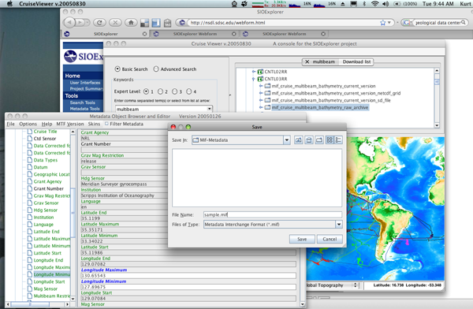
I was able to download some data and look at what they publish for metadata:
% less CNTL14RR.metadata ... mif_cruise_data-corrected-for-ship-draft::YES mif_cruise_data-corrected-for-tides::NO mif_cruise_data-types::depth_sec gravity_field gravity_freeair multibeam mif_cruise_datum::WGS84 mif_cruise_geographic-location:: NP12 mif_cruise_grant-agency::NSF mif_cruise_grant-number::Ship Operating Funds mif_cruise_grav-mag-restriction::release mif_cruise_grav-sensor::LaCoste Romberg S38 mif_cruise_hdg-sensor::Meridian Surveyor gyrocompass mif_cruise_institution::Scripps Institution of Oceanography mif_cruise_language::en mif_cruise_latitude-end::44.59002 mif_cruise_latitude-maximum::44.59139 mif_cruise_latitude-minimum::21.23763 mif_cruise_latitude-start::21.31145 mif_cruise_longitude-end::235.88332 mif_cruise_longitude-maximum::235.88332 mif_cruise_longitude-minimum::202.11691 mif_cruise_longitude-start::202.12568 ...
NOAA's NGDC has a wiki! Metadata wiki. However, they don't even define NMMR until you dig deeper - NOAA Metadata Manager and Repository - in NMMR For Dummies
NGDC publish metadata has a multibeam survey section. Of course, the first cruise I hit was a CCOM Law of the Sea cruise by Brian Calder... KNOX17RR. It's also available as XML: KNOX17RR.xml
Then there is Geospatial One Stop [GOS] ...
10.14.2008 08:03
Parsing RMC NMEA position message with a regular expression (regex)
Update 2008-11-21: you can also use the groupdict() method on
a match to get back a dictionary of the groups.
Yesterday, I ended up doing a bunch of work that ended up not being necessary. Time to toss this code in the rainy day fund. The SR162g AIS receiver spits out GPS RMC position messages. Here is my python regex code that I created to parse it. It's easy enough to use split and string slicing to get all the parse, but I'd guess that the regex will be faster and is definitely more compact. Plus writing complicated regex'es is not too bad with the help of kodos.
Yesterday, I ended up doing a bunch of work that ended up not being necessary. Time to toss this code in the rainy day fund. The SR162g AIS receiver spits out GPS RMC position messages. Here is my python regex code that I created to parse it. It's easy enough to use split and string slicing to get all the parse, but I'd guess that the regex will be faster and is definitely more compact. Plus writing complicated regex'es is not too bad with the help of kodos.
#!/usr/bin/env python
#
import re
#
rawstr = r'''^[$!](?P<prefix>[A-Z][A-Z])(?P<msg_type>RMC)
,(?P<hour>\d\d)(?P<minute>\d\d)(?P<second>\d\d\.\d\d)
,(?P<status>[A-Z])
,(?P<latitude>(?P<lat_deg>\d\d)(?P<lat_min>\d\d*.\d*))
,(?P<north_south>[NS])
,(?P<longitude>(?P<lon_deg>\d\d\d)(?P<lon_min>\d\d.\d*))
,(?P<east_west>[EW])
,(?P<speed_knots>\d*.\d*)
,(?P<course_degrees>\d*.\d*)
,(?P<day>\d\d)(?P<month>\d\d)(?P<year>\d\d)
,(?P<magnetic_variation_degrees>\d*.\d*)
,(?P<mag_var_east_west>[EW])
(,(?P<mode>[ADE]))?
(?P<checksum>[*][0-9A-F][0-9A-F])'''
#
matchstr = '$GPRMC,121437.60,A,4212.0258,N,07040.9543,W,18.08,94.6,011008,15.1,W,A*34,rrvauk-sr162g,1222863277.98'
#
compile_obj = re.compile(rawstr, re.VERBOSE)
match_obj = compile_obj.search(matchstr)
#
print 'prefix ', match_obj.group('prefix')
print 'msg_type ', match_obj.group('msg_type')
print 'hour ', match_obj.group('hour')
print 'minute ', match_obj.group('minute')
print 'second ', match_obj.group('second')
print 'status ', match_obj.group('status')
print 'latitude ', match_obj.group('latitude')
print 'lat_deg ', match_obj.group('lat_deg')
print 'lat_min ', match_obj.group('lat_min')
print 'north_south', match_obj.group('north_south')
print 'longitude ', match_obj.group('longitude')
print 'lon_deg ', match_obj.group('lon_deg')
print 'lon_min ', match_obj.group('lon_min')
print 'east_west ', match_obj.group('east_west')
print 'speed_knots', match_obj.group('speed_knots')
print 'course_degrees', match_obj.group('course_degrees')
print 'day ', match_obj.group('day')
print 'month ', match_obj.group('month')
print 'year ', match_obj.group('year')
print 'magnetic_variation_degrees', match_obj.group('magnetic_variation_degrees')
print 'mag_var_east_west', match_obj.group('mag_var_east_west')
print 'mode ', match_obj.group('mode')
print 'checksum ', match_obj.group('checksum')
When run, it does this:
./gps_re.py prefix GP msg_type RMC hour 12 minute 14 second 37.60 status A latitude 4212.0258 lat_deg 42 lat_min 12.0258 north_south N longitude 07040.9543 lon_deg 070 lon_min 40.9543 east_west W speed_knots 18.08 course_degrees 94.6 day 01 month 10 year 08 magnetic_variation_degrees 15.1 mag_var_east_west W mode A checksum *34If I had a bit more time, I'd pull out an IGRF program an verify the 15.1 degrees of magnetic field declination offset.
10.13.2008 23:13
Reception test
Two weeks ago, we did a reception test with a Class A transponder at
the visitor center at the Cape Cod National Seashore. The Auk was out
for other tasks, so we logged the AIS traffic from the on board Furuno
F150 via the pilot port. The serial port was not always being logged,
so the red lines are where we have AIVDO position messages. The yellow
thumbtacks are where we received zone messages. The large transparent green
circles are the zones around each of the acoustic buoys. The LNG terminal
is in the top left. LNG vessels are much taller than the Auk and should do
even better.
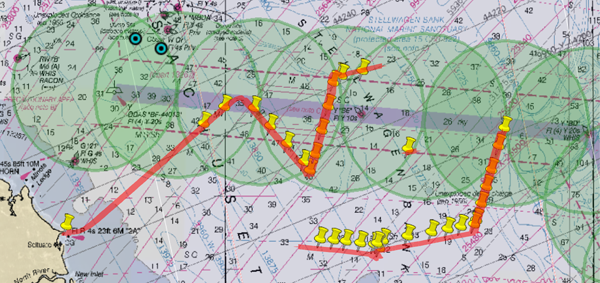
10.13.2008 12:09
DOT to Create Marine Highways
DOT to Create New Marine Highways [marine link]
The federal government will establish a new national network of marine highways to help move cargo across the country in order to cut congestion on some of the nation's busiest highways, announced U.S. Deputy Secretary of Transportation Thomas Barrett. . The Department's "Marine Highways" initiative calls for the selection and designation of key maritime inland and coastal maritime corridors as marine highways, the Admiral said. These routes will be eligible for up to $25 million in existing federal capital construction funds, he noted, and ensures that these communities will continue to qualify for up to $1.7 billion in federal highway congestion mitigation and air quality (CMAQ) funds. ...US Marine Highway Initiative [US Maritime Administration]. I'm not familar with the Maritime Administration. How does this fit in with NOAA and the USCG?
The Maritime Administration is the agency within the U.S. Department of Transportation dealing with waterborne transportation. Its programs promote the use of waterborne transportation and its seamless integration with other segments of the transportation system, and the viability of the U.S. merchant marine. The Maritime Administration works in many areas involving ships and shipping, shipbuilding, port operations, vessel operations, national security, environment, and safety. The Maritime Administration is also charged with maintaining the health of the merchant marine, since commercial mariners, vessels, and intermodal facilities are vital for supporting national security, and so the agency provides support and information for current mariners, extensive support for educating future mariners, and programs to educate America's young people about the vital role the maritime industry plays in the lives of all Americans. The Maritime Administration also maintains a fleet of cargo ships in reserve to provide surge sealift during war and national emergencies, and is responsible for disposing of ships in that fleet, as well as other non-combatant Government ships, as they become obsolete.
10.13.2008 11:54
Trac BitTeX
A while back, I proposed on Trac Hacks a BitTrac plugin. lcordier
created CiteMacro
to do this. Yeah! I haven't been using Trac much lately, but I wish
I was.
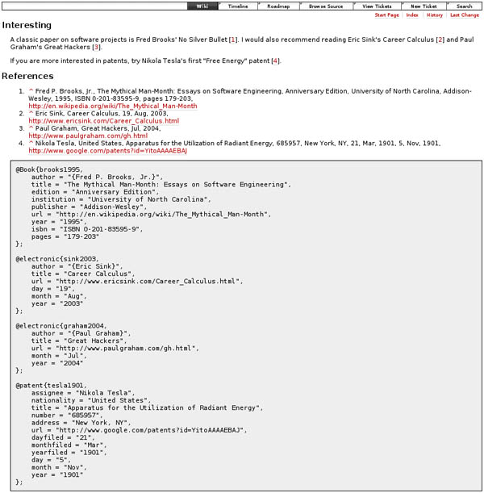
10.13.2008 09:35
mbinfo for metadata?
Val suggested mbinfo for extracting metadata. This sounds great, but
I ran into trouble on the bounding box.
% mbinfo -I0162_20080616_161142_RVCS.all
.
Swath Data File: 0162_20080616_161142_RVCS.all
MBIO Data Format ID: 56
Format name: MBF_EM300RAW
Informal Description: Simrad current multibeam vendor format
Attributes: Simrad EM120, EM300, EM1002, EM3000,
bathymetry, amplitude, and sidescan,
up to 254 beams, variable pixels, ascii + binary, Simrad.
.
Data Totals:
Number of Records: 85593
Bathymetry Data (160 beams):
Number of Beams: 13694880
Number of Good Beams: 13677149 99.87%
Number of Zero Beams: 17731 0.13%
Number of Flagged Beams: 0 0.00%
Amplitude Data (160 beams):
Number of Beams: 13694880
Number of Good Beams: 13677149 99.87%
Number of Zero Beams: 17731 0.13%
Number of Flagged Beams: 0 0.00%
Sidescan Data (1024 pixels):
Number of Pixels: 87647232
Number of Good Pixels: 10341519 11.80%
Number of Zero Pixels: 77305713 88.20%
Number of Flagged Pixels: 0 0.00%
.
Navigation Totals:
Total Time: 0.5000 hours
Total Track Length: 7377.5257 km
Average Speed: 14754.9531 km/hr (7975.6503 knots)
.
Start of Data:
Time: 06 16 2008 16:11:42.497000 JD168
Lon: 0.0000 Lat: 0.0000 Depth: 7.5700 meters
Speed: 0.0000 km/hr ( 0.0000 knots) Heading: 70.7000 degrees
Sonar Depth: 1.2000 m Sonar Altitude: 5.7300 m
.
End of Data:
Time: 06 16 2008 16:41:42.509000 JD168
Lon: -68.7601 Lat: 44.4260 Depth: 14.7700 meters
Speed: 9.0000 km/hr ( 4.8649 knots) Heading: 119.3900 degrees
Sonar Depth: 1.0600 m Sonar Altitude: 12.2500 m
.
Limits:
Minimum Longitude: -68.7785 Maximum Longitude: 0.0001
Minimum Latitude: -0.0001 Maximum Latitude: 44.4276
Minimum Sonar Depth: 1.0100 Maximum Sonar Depth: 1.2400
Minimum Altitude: 1.9800 Maximum Altitude: 14.8900
Minimum Depth: 3.6800 Maximum Depth: 19.1600
Minimum Amplitude: 17.0000 Maximum Amplitude: 75.0000
Minimum Sidescan: 0.5000 Maximum Sidescan: 69.0000
The max lon and min lat are off, which is very strange as the nav looks
okay:
% mbnavlist -OXY -I0162_20080616_161142_RVCS.all > xy % minmax xy xy: N = 18001 <-68.7785/-68.7601> <44.4007/44.4275>If I use mbinfo -G, then it seems to do the right thing and discard the 0,0 points. It appears that mbnavlist already does that.
% mbinfo -I0162_20080616_161142_RVCS.all -G ... Limits: Minimum Longitude: -68.7785 Maximum Longitude: -68.7599 Minimum Latitude: 44.4006 Maximum Latitude: 44.4276 Minimum Sonar Depth: 1.0100 Maximum Sonar Depth: 1.2400 Minimum Altitude: 1.9800 Maximum Altitude: 14.8900 Minimum Depth: 3.6800 Maximum Depth: 19.1600 Minimum Amplitude: 17.0000 Maximum Amplitude: 75.0000 Minimum Sidescan: 0.5000 Maximum Sidescan: 69.0000Val said this is likely due to Simrad storing navigation in separate packets from the pings. You can have pings before any navigation in a raw file.
10.12.2008 20:50
Fall Colors in NH - Leaf Peeping
Yesterday was a day of work, but today was a day to check out the fall colors.
10.12.2008 09:22
mp for checking metadata
It looks like we might be a fair ways away from having valid FDGC
metadata. I don't know enough about the specification to know what is
valid and what is not, so I went looking for software that might
validate what we have. I found mp
from the USGS. I did a quick by hand build of the code and threw a
sample metadata file for a line of multibeam data at it:
0479_20080620_175447_RVCS.all.metadata.html
That looks pretty good. But then looking at the error list, we have work ahead of us to figure out how to produce proper metadata.
% mp 0479_20080620_175447_RVCS.all.metadata -e 0479_20080620_175447_RVCS.all.metadata.errors -h 0479_20080620_175447_RVCS.all.metadata.htmlThe -e has it write the errors to a file and the -h writes out a HTML file for the web. Take a look at the HTML:
0479_20080620_175447_RVCS.all.metadata.html
That looks pretty good. But then looking at the error list, we have work ahead of us to figure out how to produce proper metadata.
mp 2.9.8 - Peter N. Schweitzer (U.S. Geological Survey) Info: input file = 0479_20080620_175447_RVCS.all.metadata Info: process date = 20081012 Info: process time = 09:03:43 Warning (line 2): Extraneous text following element Identification_Information ignored. Check indentation of line 3. Warning (line 108): Extraneous text following element Contact_Organization ignored. Check indentation of line 109. Warning (line 111): Extraneous text following element Contact_Address ignored. Check indentation of line 112. Error (line 8): Description is not permitted in Metadata Error (line 12): Time_Period_of_Content is not permitted in Metadata Error (line 19): Status is not permitted in Metadata Error (line 21): Spatial_Domain is not permitted in Metadata Error (line 28): Keywords is not permitted in Metadata Error (line 36): Access_Constraints is not permitted in Metadata Error (line 37): Use_Constraints is not permitted in Metadata Error (line 38): Point_of_Contact is not permitted in Metadata Error (line 55): Security_Information is not permitted in Metadata Error (line 2): Description is required in Identification_Information Error (line 2): Time_Period_of_Content is required in Identification_Information Error (line 2): Status is required in Identification_Information Error (line 2): Spatial_Domain is required in Identification_Information Error (line 2): Keywords is required in Identification_Information Error (line 2): Access_Constraints is required in Identification_Information Error (line 2): Use_Constraints is required in Identification_Information Error (line 12): Currentness_Reference is required in Time_Period_of_Content Error (line 16): improper value for Beginning_Time Error (line 18): improper value for Ending_Time Error (line 19): Maintenance_and_Update_Frequency is required in Status Error (line 20): improper value for Progress Error (line 23): no element recognized in "Start_of_line_Latitude: 44.394985"; text is not permitted in Bounding_Coordinates ... 72 errors: 6 unrecognized, 26 misplaced, 33 missing, 1 empty, 6 bad_valueThe code comes with xtme for creating metadata files, which will hopefully make understanding this output a lot easier.
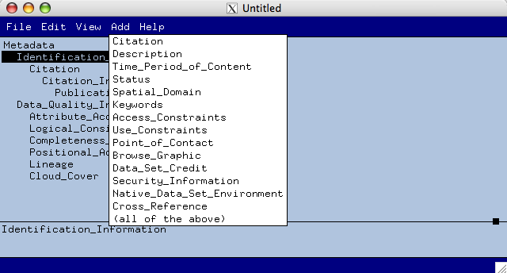
10.11.2008 19:20
The mystery vegitable solved
I had been wondering what this thing taking over my garden is. Last
night, several people were convinced that it is a squash.
We went ahead and harvested it today to discover that it is definitely a green pumpkin with a little bit of orange that was hiding underneath. It is currently in the process of becoming a part of a modified version of: Recipe For Cooking Stuffed Pumpkin [toaster-oven.net]
The results were very tasty!

We went ahead and harvested it today to discover that it is definitely a green pumpkin with a little bit of orange that was hiding underneath. It is currently in the process of becoming a part of a modified version of: Recipe For Cooking Stuffed Pumpkin [toaster-oven.net]
The results were very tasty!
10.10.2008 12:14
Delicious tagrols
Just looking at Delicious book marking a bit more... they have a
tagroll feature that shows a tag cloud:
and a linkroll:
Or just a simple Network Badge:
and a linkroll:
Or just a simple Network Badge:
10.10.2008 10:31
Correct zone message
Here is a quick update with a zone message that has the correct zone
status. Also, Monica has a post on AIS: AIS
helps save the whales
Server side:
Server side:
3 {3: datetime.datetime(2008, 10, 10, 8, 6)}
status_to_zones: WHALES_PRESENT
zones:
ZoneMsg
dac: 366
fi: 34
zone_id: 3
zone_type: 1 [Right Whales PRESENT]
start_utc_day: 10
start_utc_hour: 8
start_utc_minute: 6
zone_duration_minutes: 1440
num zones: 1
ZoneCircular 9260m radius at (-70.45434, 42.33325)
ZoneCircular
radius: 9260m
longitude: -70.454336
latitude: 42.333248
sending "BMS,SBNMS,43.000,-68.300,41.000,-71.300,3,1001,5,1223735215,0101101110100010,0001100000010101001000000110100100000110101111010111110001010011100110000011100100101000110000100100001011000000"
Received from N-AIS:
./zonemsg_decode.py '!AIVDM,1,1,,A,803OvriK`QPE86T6gGiCV3T`hT;000,4*54,s26774,d-107,T10.61714596,x91153,r003669946,1223648831'
{'DAC': 366, 'RepeatIndicator': 0, 'UserID': 3669739, 'Spare': 0, 'MessageID': 8, 'FI': 34}
ZoneMsg
dac: 366
fi: 34
zone_id: 3
zone_type: 1 [Right Whales PRESENT]
start_utc_day: 10
start_utc_hour: 8
start_utc_minute: 6
zone_duration_minutes: 1440
num zones: 1
ZoneCircular 9260m radius at (-70.45434, 42.33325)
ZoneCircular
radius: 9260m
longitude: -70.454335
latitude: 42.3332466667
The crontab is now set like this:
% crontab -l # m h dom mon dow command 0-59/5 * * * * cd /home/schwehr/projects/rap && ./do_update.bashA batch of whale msgs. There are 9 as we have one buoy that is currently reporting being down.
!AIVDM,1,1,,B,803OvriK`Q05>`0Fg?TIV3`j0T;000,4*2A,s27037,d-106,T12.45712056,x92020,r003669946,1223649613 !AIVDM,1,1,,A,803OvriK`QPE86T6gGiCV3T`hT;000,4*54,s26982,d-106,T12.91045208,x92022,r003669946,1223649613 !AIVDM,1,1,,B,803OvriK`R0E27T6gOv763PKLT;000,4*37,s31924,d-085,T13.33702985,x122948,r003669945,1223649614 !AIVDM,1,1,,A,803OvriK`RPE4IT6g`:kV3L:0T;000,4*62,s31742,d-085,T13.52369577,x122949,r003669945,1223649614 !AIVDM,1,1,,B,803OvriK`S05>`0FghGI63GlLT;000,4*51,s26990,d-106,T14.03046862,x92026,r003669946,1223649614 !AIVDM,1,1,,A,803OvriK`SPE8QT6gpSnV3CJlT;000,4*28,s27051,d-106,T14.51046670,x92028,r003669946,1223649615 !AIVDM,1,1,,B,803OvriK`T05>`0FgtEM62`0TT;000,4*2E,s31933,d-085,T14.96369401,x122955,r003669945,1223649615 !AIVDM,1,1,,A,803OvriK`TPDiPT6h06NV1tULT;000,4*7E,s31735,d-085,T15.39034995,x122957,r003669945,1223649616 !AIVDM,1,1,,B,803OvriK`U05>`0Fh3nt61A9DT;000,4*4E,s31960,d-084,T15.57701587,x122958,r003669945,1223649616Here is the corresponding whale status from ListenForWhale:
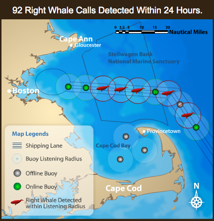
10.10.2008 08:49
Tsunami Detection report
Something that interests me after my PhD:
Tsunami Detection and Warnings for the United States [OpenCRS] Congressional Research Report
Congress raised concerns about the possible vulnerability of U.S. coastal areas to tsunamis, and the adequacy of early warning for coastal areas, after a strong underwater earthquake struck off the coast of Sumatra, Indonesia, on December 26, 2004. The earthquake generated a tsunami that devastated many coastal communities around the northern Indian Ocean, and may have cost around 170,000 known deaths and 100,000 still missing and generated $186 million in damages. Officials determined then that no tsunami early warning systems operated in the Indian Ocean. In December 2005, President Bush released an action plan for expanding the U.S. tsunami detection and early warning network, which was expected to cost millions of dollars and would include building the infrastructure and maintaining its operations. Some Members of Congress argued that the benefits would far outweigh the costs; other Members questioned the probability of tsunamis outside the Pacific Basin. Long before the tsunami disaster, the National Oceanic and Atmospheric Administration (NOAA) in the Department of Commerce envisioned "piggy backing" tsunami detection and warning instrumentation on existing marine buoys, tide gauges, and other ocean observation and monitoring systems. However, NOAA was also experimenting with a new deep water tsunami detection technology. Congress approved emergency funding in FY2005 for the President's action plan for procuring and deploying a comprehensive U.S. tsunami early detection and warning system. This meant expanding an existing six deep ocean tsunami detection buoys into a network of 39, which would be sited in the Pacific and Atlantic Ocean Basins, including the Gulf of Mexico, Caribbean Sea, and the Far Pacific Ocean to monitor U.S. trust territories at risk. Proponents of the NOAA program also called for funding authorization to address long-term needs of the U.S. network, such as maintenance, and to support social programs aimed at disaster preparedness and adaptation to risk. ...
10.09.2008 14:22
The life of a zone message
Update: Working out in the open is sometime difficult. The text below
pointed out to me a bug in my code that had the occurance of whales
always set to no whales. The bits are correct, but this message
should have been set to be WHALES_PRESENT. If you look at the last
detect, we are still within 24 hours. Bug fixed and committed.
Here is the current process for one zone message from my point of view. First, I query the server for the most recent whale status and get back some XML. I parse that into a dictionary:
Here is the current process for one zone message from my point of view. First, I query the server for the most recent whale status and get back some XML. I parse that into a dictionary:
{'TSS-AB02':
{
'alert_expires': datetime.datetime(2008, 10, 10, 9, 33),
'zone_id': 1,
'last_detect': datetime.datetime(2008, 10, 9, 9, 33),
'last_transmit': datetime.datetime(2008, 10, 9, 12, 33),
'last_good_data': datetime.datetime(2008, 10, 9, 12, 33),
}
}
From that, I generate a dictionary of condensed status. If the buoy has
been offline for longer than a certain time, it is just left out.
{2: datetime.datetime(2008, 10, 9, 9, 33)}
I then generate the binary for the DAC and FI identifying the binary
messages. Secondly, I create the payload for the AIS Binary Broadcast
Message.
1223662588 0101101110100010,0001000000000100101001100001100100000110101111001111100100011001100110000011101000110010000000100100001011000000Once that is all ready, I craft the "Fetcher/Formatter" string that will be sent to the QueueManager. The string specifies the bounding box that will be interested in the message along with several other parameters.
BMS,SBNMS,43.000,-68.300,41.000,-71.300,2,1001,5,1223662588,0101101110100010,0001000000000100101001100001100100000110101111001111100100011001100110000011101000110010000000100100001011000000Control then switches over to the QueueManger.
Received from FF: BMS,SBNMS,43.000,-68.300,41.000,-71.300,2,1001,5,1223662588,0101101110100010,0001000000000100101001100001100100000110101111001111100100011001100110000011101000110010000000100100001011000000 Parsing received FF data and adding to message queue... Adding new message to queue: Message time: 1223662588, type: 1001, station id: 2 , binary data: 0001000000000100101001100001100100000110101111001111100100011001100110000011101000110010000000100100001011000000The QueueManager (QM) then waits for AisRadioInterface to connect and get waiting messages. The AisRadioInterface connects every 1 minute to pick up new messages. From the QM, the transaction looks like this:
Dequeing message: Message time: 1223662588, type: 1001, station id: 2 , binary data: 0001000000000100101001100001100100000110101111001111100100011001100110000011101000110010000000100100001011000000 Assembled message: BMS,SBNMS,43.000,-68.300,41.000,-71.300,Fr8@1:HI1ckq6IPr<P92h0,2*65 Sending message to client: BMS,SBNMS,43.000,-68.300,41.000,-71.300,Fr8@1:HI1ckq6IPr<P92h0,2*65Now, let's look at the view from the AisRadioInterface:
Establishing connection to Queue Manager... Established TCP/IP connection Receiving data from Queue Manager: BMS,SBNMS,43.000,-68.300,41.000,-71.300,Fr8@1:HI1ckq6IPr<P92h0,2*65 No Data Finished receiving data from Queue Manager Closed connection to Queue Manager Formatting sentences for AIS Radio... !VTBBM,1,1,0,0,8,Fr8@1:HI1ckq6IPr<P92h0,2*05 Sending data to AIS Radio...I didn't write the QueueManager or AisRadioInterface, so I can't go into the details of how they work. The above message decodes to:
ZoneMsg
dac: 366
fi: 34
zone_id: 2
zone_type: 0 [Right Whales Not Observed]
start_utc_day: 9
start_utc_hour: 9
start_utc_minute: 33
zone_duration_minutes: 1440
num zones: 1
ZoneCircular 9260m radius at (-70.56632, 42.34032)
ZoneCircular
radius: 9260m
longitude: -70.566316
latitude: 42.34032
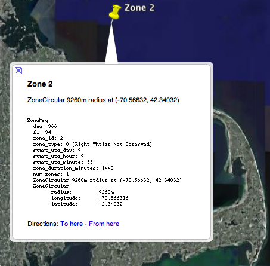
10.09.2008 11:02
Automated metadata for Caris data
Looking into the Caris directory, I see a more complicated situation.
% cd 0208_20080617_133841_RVCS % ls -l total 203256 -rwx------ 42864 Jun 29 15:47 GPSHeight -rwx------ 128 Jun 29 15:47 GPSHeightLineSegments -rwx------ 28680 Jun 29 15:47 GPSHeightTmIdx -rwx------ 424980 Jun 29 15:47 Gyro -rwx------ 128 Jun 29 15:47 GyroLineSegments -rwx------ 284432 Jun 29 15:47 GyroTmIdx -rwx------ 424980 Jun 29 15:47 Heave -rwx------ 128 Jun 29 15:47 HeaveLineSegments -rwx------ 284432 Jun 29 15:47 HeaveTmIdx -rwx------ 1285 Jun 29 15:47 InstallationParameter.xml -rwx------ 4537 Oct 7 14:58 LogFile -rwx------ 71432 Jun 29 15:47 Navigation -rwx------ 758 Jun 29 15:58 Navigation.hndf -rwx------ 136 Jun 29 15:47 NavigationLineSegments -rwx------ 28680 Jun 29 15:47 NavigationTmIdx -rwx------ 54493884 Jun 29 15:47 ObservedDepths -rwx------ 128 Jun 29 15:47 ObservedDepthsLineSegments -rwx------ 53752 Jun 29 15:47 ObservedDepthsTmIdx -rwx------ 424980 Jun 29 15:47 Pitch -rwx------ 128 Jun 29 15:47 PitchLineSegments -rwx------ 284432 Jun 29 15:47 PitchTmIdx -rwx------ 54627680 Oct 7 14:58 ProcessedDepths -rwx------ 10033 Oct 7 14:58 ProcessedDepths.lsf -rwx------ 144 Oct 7 14:58 ProcessedDepthsLineSegments -rwx------ 53752 Oct 7 14:58 ProcessedDepthsTmIdx -rwx------ 424980 Jun 29 15:47 Roll -rwx------ 128 Jun 29 15:47 RollLineSegments -rwx------ 284432 Jun 29 15:47 RollTmIdx -rwx------ 54493876 Jun 29 15:47 SLRange -rwx------ 120 Jun 29 15:47 SLRangeLineSegments -rwx------ 53752 Jun 29 15:47 SLRangeTmIdx -rwx------ 160560 Jun 29 15:47 SSP -rwx------ 128 Jun 29 15:47 SSPLineSegments -rwx------ 107464 Jun 29 15:47 SSPTmIdx -rwx------ 507 Jun 29 15:47 Svp -rwx------ 40877144 Jun 29 19:01 TPE -rwx------ 76 Jun 29 19:01 TPELineSegments -rwx------ 53752 Jun 29 19:01 TPETmIdx -rwx------ 408 Oct 7 14:52 Tide -rwx------ 124 Oct 7 14:52 TideLineSegments -rwx------ 280 Oct 7 14:52 TideTmIdx -rwx------ 13 Jun 29 15:47 originalSoundVelocityLooking into the Navigation file, I see:
% less Navigation HDCS^@^@^@^C^@^@^@^A^@^@^@^A<80>^@^@^@^@^@^M<F0>^@^@^C<E8>^@<E4>k^S<FF> <FF><C7>^?^@^EA<D7>^@^@^@^A^@^@^@^A^@vA^N^@^@^@^L^@^C)<D4><FF>H<DC><F7> <FF><FF>GB<FF><FF><FF><F0>^@^@^@^@<FF><FF><C7>^?^@^@^@^L<FF><FF><FF><F0> ^@^@^@^@^@^@^@^@<FF><FF><C7><E3>^@^@^@F<FF><FF><FF><D7>^@^@^@^@^@^@^@^@But looking at the LogFile as suggested by Brian Calder yields a likely solution
* Depth Filter Summary Report - Num Depths Rejected:
By Disabled Beam: 1258546
Less than 0 meters: 0
Greater than 1000 meters: 0
* Navigation Filter Report - 0 Rejected
* Extents within HDCS:
Time - Min/Max: 2008 169 13:38:31 to 2008 169 13:44:30
Depth - Min/Max in meters: 6.63 to 15.21
Number of Profiles: 6688
Number of Depths: 2138958
Positions - Latitude (Min/Max): +044-24-13.205 to +044-24-55.965
Longitude (Min/Max): -068-46-09.951 to -068-46-00.199
Number of Positions: 3568
I need to be able to parse metadata files, so it looks like more parsing is in my future.
Python has a range of parsing tools from the simple string searches and regular expressions (regex) to
parsing packages.
Lot's more python parsers... and LanguageParsing [Python wiki]
10.09.2008 08:29
Creating metadata with Cheetah templates
For each of our multibeam surveys, we need to create a metadata file. For
the recent Summer Hydro course, CCOM is generating a metadata file for each
line of the data. I've been interested in taking a crack at metadata for
a while as it chews up a lot of time, it labor intensive, and prone to
errors. Briana and Brian C. did a first pass of scripting the processes
and I used their efforts as a reference in addition to help from Monica,
Roxie, and indirectly Jim G. My approach is to use MB-System to read the
data from each line and then fill in a user supplied template with the
information that changes from line to line. MB-System can read the .raw.all
files generated by the EM-3002D used on the survey.
The next question is if MB-System can read the Caris formatted lines. I believe it can, but have not tried. I think this might be the same format:
Also, it is fairly easy to use mbnavlist to feed my kml Google Earth generation script.
Update: Some comments from Dale C.:
% mbnavlist -I0479_20080620_175447_RVCS.all | head 2008 06 20 17 54 47.474000 1213984487.474000 -68.787500 44.394985 181.60 0.00 2008 06 20 17 54 47.574000 1213984487.574000 -68.787501 44.394982 181.32 10.10 2008 06 20 17 54 47.673000 1213984487.673000 -68.787501 44.394980 181.03 10.14 2008 06 20 17 54 47.774000 1213984487.774000 -68.787501 44.394977 180.73 9.74 2008 06 20 17 54 47.874000 1213984487.874000 -68.787502 44.394975 180.43 10.10 2008 06 20 17 54 47.974000 1213984487.974000 -68.787502 44.394972 180.12 10.27 2008 06 20 17 54 48.089000 1213984488.089000 -68.787503 44.394970 179.77 8.73 2008 06 20 17 54 48.174000 1213984488.174000 -68.787503 44.394967 179.47 11.81 2008 06 20 17 54 48.274000 1213984488.274000 -68.787503 44.394965 179.14 9.87 2008 06 20 17 54 48.374000 1213984488.374000 -68.787504 44.394963 178.80 9.44That's more information than I'm interested in, so let's use a flag to mbnavlist to get the UTC seconds, x, and y with -OMXY:
% mbnavlist -OMXY -I0479_20080620_175447_RVCS.all | head 1213984487.474000 -68.787500 44.394985 1213984487.574000 -68.787501 44.394982 1213984487.673000 -68.787501 44.394980 1213984487.774000 -68.787501 44.394977 1213984487.874000 -68.787502 44.394975 1213984487.974000 -68.787502 44.394972 1213984488.089000 -68.787503 44.394970 1213984488.174000 -68.787503 44.394967 1213984488.274000 -68.787503 44.394965 1213984488.374000 -68.787504 44.394963For these lines, I've been told that the metadata should have the positions of the first and last shot rather than the bounding box. I really want this info in python, so I used os.popen to capture the output that goes to stdout.
def get_nav_info(filename):
'Use MB System to read the multibeam navigation data'
start=None
for line in os.popen("mbnavlist -OMXY -I%s" % filename):
unix_utc_timestamp,x,y = line.split()
if not start:
start = unix_utc_timestamp
start_x = x
start_y = y
end = unix_utc_timestamp
end_x = x
end_y = y
return {'start':start,'start_x':start_x,'start_y':start_y,'end':end,'end_x':end_x,'end_y':end_y}
The above code captures the first and last lines of the nav, returning
it in a dictionary. I need a bit more information and I want to have the
start and end times as python objects, so I need to clean things up before
I get to the templating part.
import os,stat,datetime line_info = get_nav_info(filename) line_info['start'] = datetime.datetime.utcfromtimestamp(float(line_info['start'])) line_info['end'] = datetime.datetime.utcfromtimestamp(float(line_info['end'])) filesize = os.stat(filename)[stat.ST_SIZE]/1000000. # Make it MBThe results from get_nav_info are all strings. Therefor, I have to convert the start and end unix UTC timestamps to floats before converting them to datetime objects. os.stat gets the file size in bytes. Now I am ready to open the template and use it with Cheetah to have the values filled in.
import Cheetah.Template
template=open('template.cheetah').read()
t = Cheetah.Template.Template(template,
searchList=[line_info,
{'filename':filename,
'filesize':filesize}
]
)
open(filename+'.metadata','w').write(str(t)) # "Render" the template to a file
Now the key piece to this is the metadata template file:
Metadata:
Identification_Information: $filename ## Filename
Citation:
Citation_Information:
Title: Castine Harbor and Bagaduce River Hydrographic Survey
...
Time_Period_of_Content:
Time_Period_Information:
Range_of_Dates/Times:
Beginning_Date: $start.strftime('%Y-%m-%d') ## Start date
Beginning_Time: $start.strftime('%H-%M') ## Start time
Ending_Date: $end.strftime('%Y-%m-%d') ## End date
Ending_Time: $end.strftime('%H-%M') ## End time
...
Spatial_Domain:
Bounding_Coordinates:
Start_of_line_Latitude: $start_y ## Start_of_line_Latitude
Start_of_line_Longitude: $start_x ## Start_of_line_Longitude
End_of_line_Latitude: $end_y ## End_of_line_Latitude
End_of_line_Longitude: $end_x ## End_of_line_Longitude
Bounding_Coordinate_Units: Decimal Degree
...
Standard_Order_Process:
Digital_Form:
Digital_Transfer_Information:
Format_Name: .ALL
File_Decompression_Technique:
Transfer_Size: $filesize ## transfer_size_MB
...
Metadata_Standard_Name: FGDC Content Standard for Digital Geospatial Metadata ("CSDGM version 2")
Metadata_Standard_Version: FGDC-STD-001-1998
Metadata_Time_Convention: Local Time
Metadata_Security_Information:
Metadata_Security_Classification: Public Release
The command line call:
% ./metadata.py -t metadata.tmpl 0479_20080620_175447_RVCS.allThe final results:
% cat 0479_20080620_175447_RVCS.all.metadata
Metadata:
Identification_Information: 0479_20080620_175447_RVCS.all
Citation:
Citation_Information:
Title: Castine Harbor and Bagaduce River Hydrographic Survey
...
Time_Period_of_Content:
Time_Period_Information:
Range_of_Dates/Times:
Beginning_Date: 2008-06-20
Beginning_Time: 17-54
Ending_Date: 2008-06-20
Ending_Time: 17-55
...
Spatial_Domain:
Bounding_Coordinates:
Start_of_line_Latitude: 44.394985
Start_of_line_Longitude: -68.787500
End_of_line_Latitude: 44.394806
End_of_line_Longitude: -68.787166
Bounding_Coordinate_Units: Decimal Degree
...
Standard_Order_Process:
Digital_Form:
Digital_Transfer_Information:
Format_Name: .ALL
File_Decompression_Technique:
Transfer_Size: 10.02543
...
Metadata_Standard_Name: FGDC Content Standard for Digital Geospatial Metadata ("CSDGM version 2")
Metadata_Standard_Version: FGDC-STD-001-1998
Metadata_Time_Convention: Local Time
Metadata_Security_Information:
Metadata_Security_Classification: Public Release
You can now generate a .metadata file:
% ./metadata.py -t metadata.tmpl *.allThis solution still leaves a lot of issues up in the air and does not guide you through creating this template, but it removes the error prone human data entry for the times and positions.
The next question is if MB-System can read the Caris formatted lines. I believe it can, but have not tried. I think this might be the same format:
% man mbio
MBIO Data Format ID: 151
Format name: MBF_OMGHDCSJ
Informal Description: UNB OMG HDCS format
(the John Hughes Clarke format)
Attributes: variable beam bathymetry and
amplitude, variable pixel
sidescan, binary, UNB
My first impressions of Cheetah is that I like it and it is
fairly simple to use. There are lots of templating engines
out there and I am considering rewriting my AIS XML to Python
compiler in a templating engine.
Also, it is fairly easy to use mbnavlist to feed my kml Google Earth generation script.
% mbnavlist -OXYM -I0162_20080616_161142_RVCS.all | awk '{print $1,$2,"RVCS",$3}' > 0162_20080616_161142_RVCS.all.xymt
% xymt2kml 0162_20080616_161142_RVCS.all.xymt > 0162_20080616_161142_RVCS.all.kml
% open 0162_20080616_161142_RVCS.all.kml
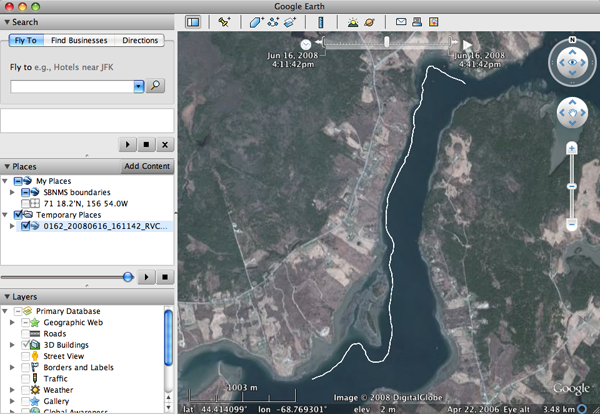
Update: Some comments from Dale C.:
This is an excellent start on a good strategy, but it is very subject to data quality issues associated w/ real data that has not yet been quality checked, such as (but not limited to): . - bad nav (a single bad ping in the middle of the file can make mess) - some data file types don't always produce a lat & long for the first ping (record) in a file . Some error/bounds checking would make this more robust. . With regard to the "reading Caris format", the internal Caris formats are proprietary. However, Caris can export gsf-format files and that should work.
10.08.2008 12:12
New NOAA speed rule
Ship Strike Reduction Rule Aims to Protect North Atlantic Right Whales
... The new rule requires vessels to travel at ten knots or less during the seasons whales are expected to be present, in designated areas along the East Coast. It will be up for renewal in five years, after scientists assess its effectiveness. The rule will go into effect in early December, 60 days after publication in the Federal Register. . In the mid-Atlantic area, the 10-knot speed restrictions will extend out to 20 nautical miles around major ports. NOAA's Fisheries Service researchers report that approximately 83 percent of right whale sightings in the mid-Atlantic were within 20 nautical miles of shore. The rule also establishes temporary voluntary speed limits in other areas when an aggregation of three or more right whales is confirmed. ...
10.07.2008 23:29
Ben works on processing VOS ship positions
Ben has been blogging about working on the VOS ship position data on maperl.com:
SVMOP:VSTP: RDBMS and SQL -- the next phase for ShipTracking
SVMOP:VSTP: SQLite experiences
SVMOP:VSTP: RDBMS and SQL -- the next phase for ShipTracking
SVMOP:VSTP: SQLite experiences
10.07.2008 23:11
Changes in the Zone AIS Binary message
The zone message being used in the SBNMS area is a subset of the
possible message. I am only using the circular geometry option, only
one geometry per message, and only 0 or 1 for the zonetype.
Here is the text table of my old zone message:
Here is the text table of my old zone message:
Parameter Num bits Description MessageID 6 AIS message number. Must be 8 RepeatIndicator 2 Indicated how many times a message has been repeated UserID 30 Unique ship identification number (MMSI) Spare 2 Reserved for definition by a regional authority. dac 10 Designated Area Code - 366 for the United States fid 6 Functional IDentifier - 63 month 4 Start time of most recent notice UTC month day 5 Start time of most recent notice UTC day of the month 1..31 hour 5 Start time of most recent notice UTC hours 0..23 min 6 Start time of most recent notice UTC minutes longitude 28 Center of the area/zone East West location latitude 27 Center of the area/zone North South location timetoexpire 15 Minutes from the start time until the notice expires. Max is aprox 23 days radius 14 Distance from center of detection zone (lat/lon above). Distance in increments of 10 meters areatype 8 What does this circular area represent Total bits 168 1 slotThe new message as it is being used for the SBNMS / Boston Approaches. Use this one! Note that the FI is now 34.
Parameter Num bits Description MessageID 6 AIS message number. Must be 8 RepeatIndicator 2 Indicated how many times a message has been repeated UserID 30 Unique ship identification number (MMSI) Spare 2 Reserved for definition by a regional authority. dac 10 Designated Area Code - 366 for the United States fid 6 Functional IDentifier - 34 zone_id 5 Number of the zone - will be 1 to 10 day 5 Start time of most recent notice UTC day of the month 1..31 hour 5 Start time of most recent notice UTC hours 0..23 min 6 Start time of most recent notice UTC minutes duration 8 10 Minute increments the start time until the notice expires zonetype 7 0: right whales not observed; 1: right whales present area_shape 1 0: circle; 1: rectangle. ALWAYS 0 for SBNMS longitude 28 Center of the area/zone East West location. As in AIS Msg 1 latitude 27 Center of the area/zone North South location. As in AIS Msg 1 radius 16 Distance from center of detection zone (lat/lon above) in meters orientation 4 ALWAYS 0 for SBNMS as this is a circle Total bits 168 1 slotHere are the changes viewed in Apple's opendiff/FileMerge:
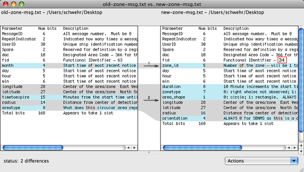
10.07.2008 16:22
Class B AIS passes FCC in US
I've seen some class B messages in the US, but now we will see more.
I'm looking for 2-3 Class B units for 3 small research vessels at UNH
(R/V Cocheco, R/V Coastal Surveyor, and the R/V Gulf Challenger). If
you are a vender and interested in becoming an industrial partner with
the Center for Coastal and Ocean mapping, let me know.
Navico NAIS-300 Class B, FCC certified! [panbo]
From the ITU spec:
Navico NAIS-300 Class B, FCC certified! [panbo]
From the ITU spec:
Message 18: Standard Class B equipment position report The Standard Class B equipment position report should be output periodically and autonomously instead of Messages 1, 2, or 3 by Class B shipborne mobile equipment, only. The reporting interval should default to the values given in table , Annex 1, unless otherwise specified by reception of a Message 16 or 23; and depending on the current SOG and navigational status flag setting. . Message 19: Extended Class B equipment position report This message should be used by Class B shipborne mobile equipment. This message should be transmitted once every 6 min in two slots allocated by the use of Message 18 in the ITDMA communication state. This message should be transmitted immediately after the following parameter values change: dimension of ship/reference for position or type of electronic position fixing device.What is Message 19?
% ipython >>> import ais.binary >>> binary.encode[18] 'B' >>> print binary.encode[19] 'C'I can look for these messages in the AIS logs, but I seem to be getting just a lot of bad messages.
for file in uscg-logs-2008-*.bz2; do bzcat $file | egrep '!AIVDM,1,1,[0-9]?,[AB],B' doneOr to look at one day:
% egrep '!AIVDM,1,1,[0-9]?,[AB],B' uscg-logs-2008-10-07 | wc -l 1202If I look closer, the one is in Canada...
% ./ais_msg_18.py -d '!AIVDM,1,1,,A,B819<C@005jiRCVuUn5UGwV5oP06,0*5E,x539161,b003669704,1223409073'
positionb:
MessageID: 18
RepeatIndicator: 0
UserID: 538070093
Reserved1: 0
SOG: 0
PositionAccuracy: 0
longitude: -123.4051616666666666666666667
latitude: 48.670455
COG: 162.1
TrueHeading: 511
TimeStamp: 12
RegionalReserved: 0
Spare: 0
RAIM: True
CommStateSelector: 1
CommState: 393222
% ./ais_msg_18.py -d -T kml-full '!AIVDM,1,1,,A,B819 foo.kml
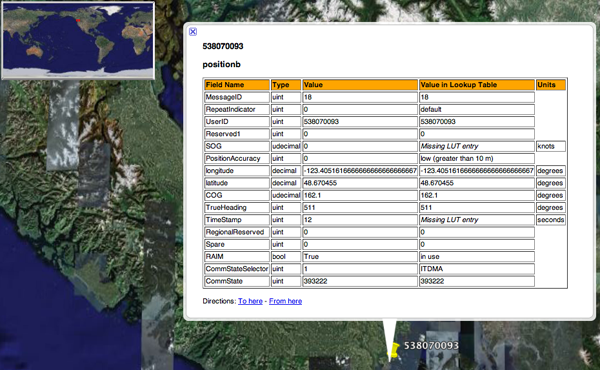
10.07.2008 13:09
Ship of the Week - Palmer
Last week, GCaptain had this: Interesting
Ship of The Week: Nathaniel B. Palmer. It's a great vessel to
work on. It was a champ making it across the souther ocean when I was
on it in December 2002 going from Christchurch to McMurdo. It is classified as an RVIB for Research Vessel/Ice Breaker.
10.07.2008 11:28
converting matlab to python
I haven't tried this, but it sounds exciting: mat2py
Thanks to Val for asking the question of how hard it would be to write a translator from .m matlab files to python.
Matlab/Octave to Python conversion facility. The tool will take existing scripts and convert them to Python. Also includes Python bindings to Octave and a small runtime support library. Built on top of Numeric Python extensions.We have a lot of matlab users around here and it would be good to have an easy migration path. I have not really used matlab in a bunch of years or I would give it a try. Anyone have comments on using it or an alternative that produces pure python + numpy/scipy?
Thanks to Val for asking the question of how hard it would be to write a translator from .m matlab files to python.
10.07.2008 08:15
AIS of a construction vessel
I'm looking at the vessel traffic for the construction of a deep water
LNG terminal. This pattern is very different than everything I've
looked at to date.
% egrep 'AIVDM,1,1,[0-9]?,[AB],[1-3]' log.ais > log.ais.123 % ais_build_sqlite.py --with-create -d position.db3 % sqlite3 positions.db3 'SELECT longitude,latitude,userid,cg_sec FROM position WHERE userid=246481000;' | tr '|' ' ' > 246481000.xymt % xymt2kml 246481000.xymt > 246481000.kml
10.07.2008 08:06
A big list of Django tips
Check out Eric Holscher's Big list
of Django tips (and some python tips too) for some really good
reading. I haven't been able to put time into Django coding in a
couple weeks and I'm itching to get back into it. I've talked to
people on the Fink IRC and I think we have a strategy for libgeos3 to
work, so I need to get on the ball and make it happen.
Relative imports - When you are using a setting file multiple times, it is nice to be able to define relative variables for your things. import os DIRNAME = os.path.dirname(__file__) DATABASE_NAME = "%s/dev.db" % DIRNAME MEDIA_URL = os.path.join(DIRNAME, 'media') TEMPLATE_DIRS = ( DIRNAME + "templates", )
10.06.2008 19:31
Fairpoint DSL
I used the Speakeasy speedtest to evaluate my
Fairpoint 768Kbps DSL connection. I got 756kbps down and 135 kbps up.
Which is pretty good. I'm running 802.11g locally, which should be
much faster. For another take, I ran on a server at work:
After upgrading to the high speed uption ("3 Mb"), I get 2855 kbps down and 682 kbps up from the speakeasy test.
20081010: I tried the speakeast test in New Market on Comcast Cable: 5133 kbps up and 2381 kbps down.
iperf -s -p 60001Then connected from the behind the DSL connection:
iperf -c somewhere.unh.edu -p 60001The results...
=------------------------------------------------------------ Client connecting to nrwais2.schwehr.org, TCP port 60001 TCP window size: 129 KByte (default) =------------------------------------------------------------ [ 4] local 192.168.2.100 port 59242 connected with 132.177.xx.xx port 60001 [ ID] Interval Transfer Bandwidth [ 4] 0.0-18.3 sec 288 KBytes 129 Kbits/secIt's too much hassle right now to setup the reverse test for the download speed.
After upgrading to the high speed uption ("3 Mb"), I get 2855 kbps down and 682 kbps up from the speakeasy test.
20081010: I tried the speakeast test in New Market on Comcast Cable: 5133 kbps up and 2381 kbps down.
10.06.2008 15:43
Smithsonian National Museum of Natural History
Colin's work is in this month's NOAA Office of Coast Survey (OCS) newsletter.
One of the projects I'm helping on is featured on the web page for the Smithsonian:
The Sant ocean Hall - Ocean Eavesdropping
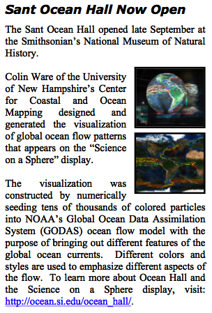
One of the projects I'm helping on is featured on the web page for the Smithsonian:
The Sant ocean Hall - Ocean Eavesdropping
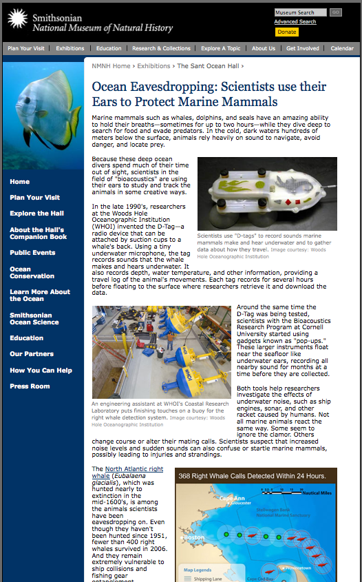
10.05.2008 23:03
AIS transponder station
This is what gear looks like out at Cape Cod. I was just out there
today swapping one of the components to it's final configuation. The
park ranger refered to this as the "Zombie Room."
Here is what things looked like while we where testing the system. There are two VDL6000 units stacked on top of each other and a SR162G for verifying the communication.
Here is what things looked like while we where testing the system. There are two VDL6000 units stacked on top of each other and a SR162G for verifying the communication.
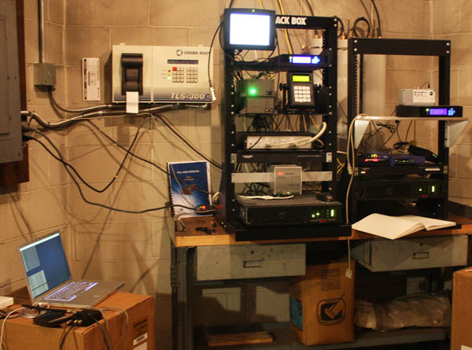
10.05.2008 07:20
Class B - No Vessel Name in Name field
Icom AIS receiver, and more on Class B [panbo]
I bet there will be a lot of mariners memorizing there registration number and/or callsign in the near future. Navgear has a take on this: Class B AIS: No Boat Names!?
Here is the message in question:
... The really new, and surprising, info about Class B is illustrated in the slide below. The USCG has decided that B transponders should not transmit boat names, as in many cases they are not official or data-based. Instead of a name, that field will be filled with "US#" and the boat's state registration or federal documentation number. ...This will likely make it easier for the USCG, ACOE, and NOAA to monitor these and match them to actual ships. Trying to find out what type of vessel I see in AIS can be a very challenging task. Having a name is sometimes not enough for us to figure out who it is. But that comes from the MMSI not being know or registered in a database that we can't access. I haven't tried accessing a state registration db yet.
I bet there will be a lot of mariners memorizing there registration number and/or callsign in the near future. Navgear has a take on this: Class B AIS: No Boat Names!?
Here is the message in question:
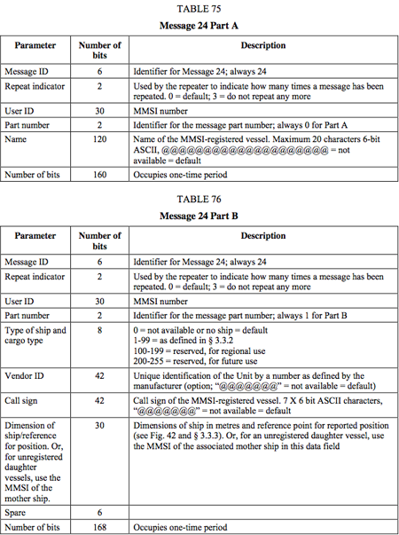
10.04.2008 06:58
Scientific Applications for Google Earth Conference
Scientific Applications for Google Earth Conference
Dear Educators, . The Google Earth Education Outreach team is proud to announce two new initiatives geared towards applying Google Earth to science education and academics. . The first is a conference we are co-hosting with the University of Michigan, focused on exploring science data visualization in Google Earth, Google Maps, and KML. The Scientific Applications for Google Earth Conference is scheduled for October 22nd and 23rd in Ann Arbor, Michigan. The two-day event will bring together academics, researchers and students from all over the country to discuss the scientific uses of virtual globes and how that technology is enabling newer and richer data interaction experiences for both expert and novice users. . Keynote speakers include Tim Killeen, Assistant Director for Geosciences at the National Science Foundation, and Dan Adkins, former Director of the National Science Foundation Office of Cyberinfrastructure. . Google engineers will be on hand to work directly with students and scientists on ways to overcome technical problems and to provide training for those interested in advanced techniques with KML. . Registration for the event is now open, details are available on the conference website. Spots are limited so be sure to check it out soon. . The second is an exciting new contest geared towards educational content in Google Earth. The KML in Research contest is open to both students and professionals. We think this will be a fun way for people working with KML to get some exposure for their work and perhaps win some prizes! . So get out your best educational ideas and bring your data to life with KML and Google Earth. In addition to prizes, winners will have their work showcased at the American Geophysical Union's annual Fall meeting on December 15th! . - Ryan Falor, Ann Bishop, Tina Ornduff, Google Earth Education Team
10.02.2008 15:41
Python arguments
Capt Ben had a couple python arg questions today that made me have to
think carefully how this actually works.
Here is a little demo of function arguments (parameters) in python.
def magic(foo=None,*args, **kwargs):
print 'foo', foo
print 'args',args
for key in kwargs:
print 'key %s .... value %s' % (key,kwargs[key])
if 'bar' in kwargs:
print 'we have a bar'
The result of calling with a dictionary being expanded with '**', and two named args.
% demo.magic(foo='bar',bar='stuff',**{'one':2,'three':4})
foo bar
args ()
key bar .... value stuff
key three .... value 4
key one .... value 2
we have a bar
Or simpler:
% demo.magic(1,2,3) foo 1 args (2, 3)
10.02.2008 13:41
Friday Seminar on Phoenix at CCOM
I'm giving the CCOM seminar tomorrow over in the Chase Ocean
Engineering building on the UNH Durham campus.
Figure: Visualization created for the Phoenix Mars Lander project. The NASA Ames stereo pipeline produced textured TINs from stereo image pairs returned from Mars that were imported into Lightwave by Kurt Schwehr and Zareh Gorjian and rendered in a full ray traced mode a spacecraft model. PIA10768 [JPL Planetary PhotoJournal]
Phoenix Mars Lander - Visualization of the Surface of Another Planet
Kurt Schwehr
2008-10-03
3:00 PM
Chase 130: Video Classroom
Kurt spent two months this summer at the Phoenix Mars Lander Science
Operation Center as the Deputy Manager of the Remote Operations and
Collaboration (ROC) Center for NASA JPL and a member of the Solar
System Visualization (SSV) group. He will talk about what it is like
to work on a Mars mission and what goes into the data processing,
computer vision, and visualization. Kurt has been a part of
technology development for Mars exploration since the early 90's and
will talk about how field tests in places such as Antarctica,
Yellowstone National Park, and the Canadian Arctic islands lead to
effective use of technology to enable globally distributed science
teams to control a spacecraft on another planet. Kurt has also been a
science team member of the Mars Pathfinder, Mars Polar Lander, and
Mars Exploration Rover (Spirit & Opportunity) missions.
Figure: Visualization created for the Phoenix Mars Lander project. The NASA Ames stereo pipeline produced textured TINs from stereo image pairs returned from Mars that were imported into Lightwave by Kurt Schwehr and Zareh Gorjian and rendered in a full ray traced mode a spacecraft model. PIA10768 [JPL Planetary PhotoJournal]
10.02.2008 13:04
Python 2.6 released yesterday
I have too much other stuff to do right now, but I so badly want to
play with python 2.6, which was released yesterday.
10.01.2008 20:05
Cruise on the R/V Auk
Today, I went out on the R/V Auk with the SBNMS crew. I had my laptop
setup for data logging. Here is my mac with an SR162G as an
independent navigation source. It didn't get much in the way of ship
contacts.
Instead, we hooked into the Furuno FA150 pilot port for better reception with a proper marine antenna mounted on the upper deck. I got lots of messages received for my test, so not I need to write some slightly different code to place where we received the messages. Usually, I am just looking for the position within the message, but this time it was a coverage test. I know where the transponder is that I'm listening for, but now I need to know where the ship is when it receives the message. Interpolating between AIVDO position messages should do nicely.
During the cruise, we deployed a popup. You can see it decending to the bottom in the echo sounder.
Coming back into Scituate after a successful test.
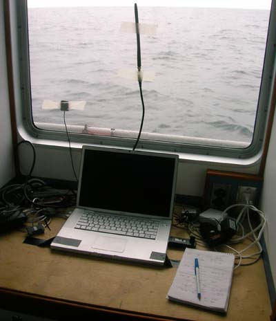
Instead, we hooked into the Furuno FA150 pilot port for better reception with a proper marine antenna mounted on the upper deck. I got lots of messages received for my test, so not I need to write some slightly different code to place where we received the messages. Usually, I am just looking for the position within the message, but this time it was a coverage test. I know where the transponder is that I'm listening for, but now I need to know where the ship is when it receives the message. Interpolating between AIVDO position messages should do nicely.
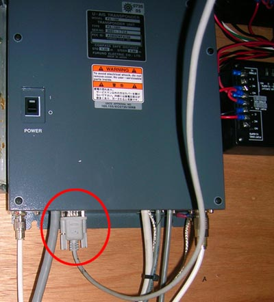
During the cruise, we deployed a popup. You can see it decending to the bottom in the echo sounder.
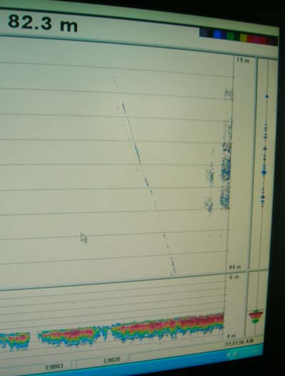
Coming back into Scituate after a successful test.